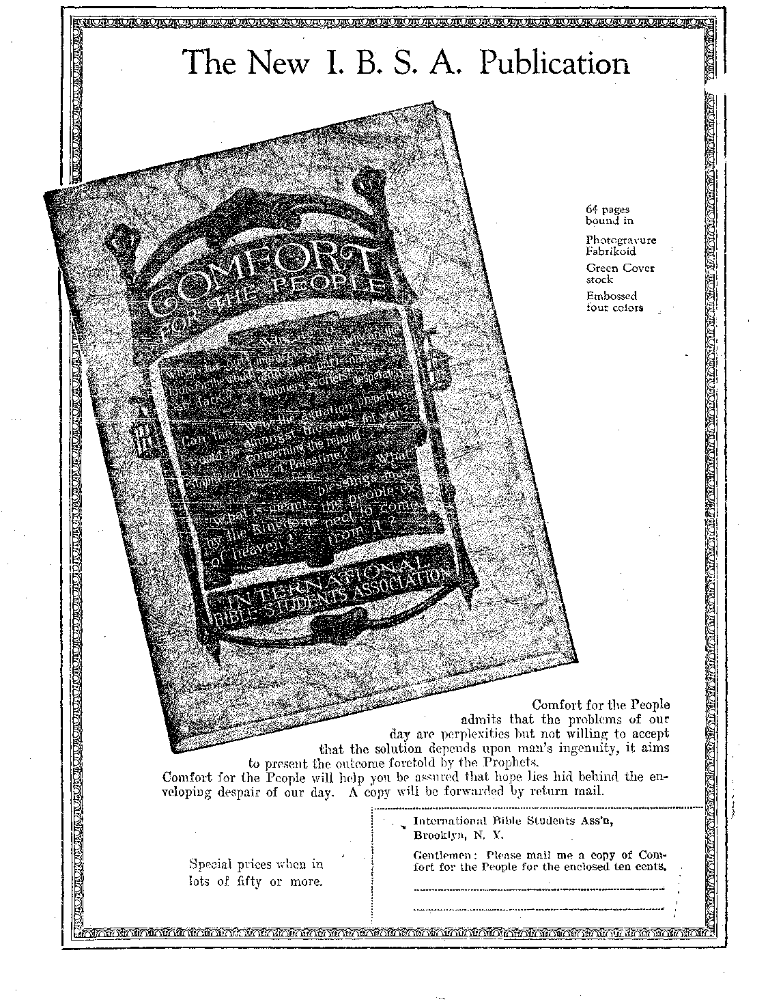

Wt’—r - ■ ....... ■ -............ ... tat
Harlem—the World’s Negro Capital ......
Finance—Commerce—Transportation
Sapta Fe Has a Nice Oil Business .
. Reduced Demand for Anthracite
Bond Fraud Charges Not Established......... ... 517
Peat for Sixteen Thousand Years
A Blooming Desert—The Rio Grande Valley
Political—Domestic and Foreign
. Political Ideals in Washington
General Dawes Gets a Bad Start
Ku KIux Klan Enters Kanada.............
■ Science and Invention
Airplane Flight Cures Deafness
Improved Transmission of Pictures by Wireless ........ 51.9
, Travel and Miscellany
From Our Canadian Correspondent ....
Life in Newfoundland............ 525
Religion and Philosophy
Churches’ Present Attitude on War
“Scriptural Names of Apostate Clergy .men”
• Makino it Interesting for Evangelist Brown
Truth About the End of the World
Studies in “The Harp of God” . . :
Published every other Wednesday at 18 Concord Street, Brooklyn, N. Y., U. S. A., by. WOODWORTH, HUDGINGS & MARTIN
Copartners and Proprietors Address: IS Concord Street, Brooklyn, jV. Y., U.S.A. CLAYION J. WOODWORTH . . . Editor ROBERT J. MARTIN . Business Manager
WM. F. HUDGINGS . . Sec’y and Treas.
Five Cents \ Copy—$1.00 A Year Make Remittances to THE GOLDEN AGB Foreign Offices : British.....34 Craven Terrace, Lancaster Gate,’ London W. 2
Canadian......... 38-40 Irwin Avenue, Toronto, Ontario
Australasian ....... 495 Collins Street, Melbourne; Australia South African ...... 6 Lelie Street, Cape Town, South Africa
Entered as second-class matter at Brooklyn, N. Y., under the Act of March 3, 1879
Volume VI Brooklyn, N.Y., Wednesday, May 20, 1925 Number 148
[Radiocast, with other items, from Watchtower WBBR on a wave length of 272.6 meters, by the Editor]
Unemployment in New York
NEMPLOYMENT in New York has been gradually growing, ever since last Fall. The heavy winter snows, and the work consequent upon snow removal ameliorated conditions somewhat; but in the cheap lodging houses of the Bowery, where the unemployed congregate, the attendances have been unusually large and growing.
rp\VO hundred unemployed called recently upon the labor committee of the house of representatives of Utah, calling attention to the fact that their babies'were crying from lack of food, that in some instances the mothers were going from place to place in search of work when they needed to be in hospitals. One man and his wife had been without food four
days. No remedies were suggested by the legislators. .
ABOUT 300,000 postal workers have been granted a'wage increase of $300 per year.
The increased wages are based upon certain increases in the parcel-post service. The postoffice department at Washington fought the measure, and the United States Chamber of Commerce was overwhelmingly against it, but both branches of Congress passed the bill by large majorities. The people in general will be glad to see the post-office workers better paid.
rpiIE Supreme Court of the State of Wash--*• ington has disbarred the attorney, Elmer Smith, who defended workmen attacked by an armed band of marching patriots. These workmen, who hold peculiar views on economic questions, when attacked in their own hall by the paraders, defended themselves and some of the attackers were killed. This was at Centralia. One of the petitioners for disbarment was leader of the band of armed men that attacked the hall.
Negroes in the North
THE restriction of foreign immigration has brought a large and permanent Negro population from the southern fields into the northern workshops. There are about 50,000 of these in each of the six cities: Cincinnati, Columbus, Kansas City, Cleveland, Detroit and Indianapolis; about one hundred thousand each in Pittsburgh, St. Louis and Chicago; and about a quarter of a million each in Philadelphia and New York. For the most part they are useful, law-abiding citizens, easily contented and largely interested in buying their own homes. •
Harlem—the World’s Negro Capital
rp HE largest Negro city in the world is a strip of land a mile wide in the Harlem district of New York city, between Lenox and Seventh Avenues, and containing 175,000 Negroes. Ten years ago there was hardly any real estate in New York city owned by Negroes. Today it is estimated that their holdings amount in value to about $60,000,000.
"LTIGGINBOTHAM, the whipping boss, who was convicted of second-degree murder for the flogging to death of Martin Tabert in a Florida convict lumber camp, and who was out on bail, awaiting a second trial, has in the meantime been indicted for murder in the first degree, along with the chief deputy sheriff of the same county, for killing a Negro in the same camp. The second murder was committed only last October. The previous one was about two years ago.
HISTORIC spots in all parts of the United
States are being marked by the Daughters of the American Revolution. Much work of this nature has already been done by the United States Tire Company, wl ich has handsome readable signs at the approaches to most cities. The present plans are for a comprehensive location and marking of all historic spots.
IN THE city of Baltimore live Mr. and Mrs.
Isaac Eshaefski, who came from Poland to Baltimore in 1919. The husband is 109 years of age. The wife is 107 years of age. Both read without glasses. They were married 91 years ago. The wife is now in a home for incurables, although reported to be feeling well and able to walk several blocks daily.
A NINE-YEAR-OLD boy at Madisonville, Kentucky, who had been seriously ill, suddenly became unable to speak or to move in any way, though his hearing was as acute as ever. In this condition he listened to the grief of his parents and to the arrangements being made for his funeral; but at length he regained his powers and is now getting well.
BENTON, Pennsylvania, cannot well help getting the concerts now. One of the boys in town has built a loud speaker apparatus outside his home; and when the current is turned on, and the proper adjustments are made, it is said that radio concerts can be heard three miles away. But what if some person of tired nerves wants to sleep?
A PLUCKY man is the German tenor singer,
Curt Taucher. At the Metropolitan Opera House he had the misfortune to fall through a stage door a distance of twenty-five feet, landing in a sub-cellar, partly on his feet and partly on a piece of iron pipe which, with his 200 pounds, he bent quite out of shape. He was helped back to the stage, and continued his part without letting the audience know that any accident had occurred.
TITHEN word got out around over the coun’ ' try that a considerable majority of the girls at Vassar were smoking, it began to hurt the reputation of the college. Letters came in from all over saying that the custom as a custom for women could not be approved. The students capitulated, and the Students Council has now ratified a resolution forbidding any student to smoke. '
TT TAKES something besides education to J- make a man. Raymond I. Turney, Director of the Los Angeles Crime Commission, points out that forty-five percent of the residents of the Los Angeles jail are high school graduates, as compared with twenty-five percent outside the walls; twelve and one-half percent have received some college education, while seven percent are college graduates, as against six and one-half percent in ordinary life.
CALIFORNIA has now a daily passenger service between Los Angeles and San Diego, 126 miles to the south. A four-passenger cabin plane makes the round trip daily, leaving Los Angeles at 10:00 a. m., and San Diego at 4.00 p. m. The trip takes ninety minutes each way. Fare for the round trip is $22. 50; one way, $14.50.
IN FEBRUARY the railroads of America were busier than ever before known at that time of year. In the first week of that month 928,244 cars were loaded with revenue paying freight, which was an increase of 22,227 over the corresponding week of 1924 and of 78,892 cars over the corresponding week of 1923.
THE Santa Fe Railroad Company made a net profit of more than $6,000,000 on its oil business. These oil properties, estimated as worth about $50,000,000, came into the possession of the Santa Fe Company as land grants from the United States Government. They are mostly located in California, for which the Santa Fe line has done and is doing much.
THE persistent and extreme increases in the price of anthracite coal during recent years are now found to be holding the industry back. There was a time when nothing would take the place of anthracite in stove or chestnut sizes. Now many western people have taken to using coke, others are using oil and electricity for fuel. Consequently the demand for anthracite shows a corresponding reduction.
rpiIE prosperity of many corporations depends largely on the bookkeeper, and the man who tells him what to do. Just now there is excitement in Washington over the claim that placing an excess valuation on the value of copper ores and oils while in the ground has caused a loss to the government of $50,000,000 in income taxes. It seems that these high val-■ nations increase the depletion allowances permitted by the government and thus reduce the income upon which tax is paid.
THE political ideal of Washington is to pay a limited number of political wire-pullers a good salary, and by one means or another to hold the common herd of government workers with their noses forever' on the grindstone. In support of this policy, both houses fell on each other’s necks and raised their own wages from $7,500 to $10,000 a year, and by one artifice or another killed every hope of better conditions for the workers beneath.
Dr. Haven Emerson, former Commissioner of
Public Health, in an address before the American Indian Defense Association, called attention to the fact that as a result of the persistent incompetence and mismanagement of the Indian Bureau at Washington, the infant mortality among the Indians is three times greater than elsewhere. There are 75,000 cases of trachoma alone; and the doctors who are employed by the Bureau are the most careless and indifferent persons to be found in the medical profession. In an epidemic of sore throat, one of these doctors used the same swab for all of the throats.
General Dawes got a bad start as the executive officer of the United States Senate.
In his opening speech he criticized the rules under which the Senate has been operating, and which the Senate believes the best protection that the country has against the party in power going to extremes. Senator Reed, of Missouri, made a caustic and satirical speech, believed to have been directed against General Dawes, which must have been a hard one for that worthy gentleman to read. He was not present when it was delivered.
T) resident Baker of the Carnegie . Institute of Technology in his annual report says: “The movement in modern life is in the direction of magnifying the importance of men of great importance in all lines of endeavor, and of minimizing the importance of the man of average talents, of making him a unit in the machinery of civilization which he can serve, but in whose direction he can have but little authority.”
rpHE oft-repeated charge that during the Wilson administration hundreds of millions of dollars were lost through the fraudulent duplication of bonds, falsification of records, etc., seems not borne out by the facts. The Treasury admits the illegal payment of only $13,100 out of approximately $100,000,000,000 (one hundred billion dollars) handled. This was due to petty thefts by dishonest employees and is not worth talking about.
"VIEW YORK is suffering from poison gas.
' But this is not something new; it is an old trouble. The gas available for cooking and heating runs high in carbon monoxid, and as a consequence the deaths run to about 400 a year from this cause alone. Men who work in garages are often asphyxiated by the carbon monoxid fumes from automobiles.
A FEW issues since we called attention to ■C-®- the wisdom of a Philadelphia judge in permitting an abused wife to sentence the husband who had beaten her. He was a veritable Solomon. Nove comes another Philadelphia judge and sentences two boys to one spanking each day for forty-seven days, to cover damages of $47 each which their fathers had to pay because the boys indulged in the robbery of a hardware store. All honor to Judge MacNeille ’
SECRETARY of War Weeks has notified the
City of Chicago that the amount of water taken from Lake Michigan must be reduced to about one-half of what it now is. The water consumed must be metered, and there must be constructed immediately a sewage disposal plant that will cost $54,000,000. The levels of the Great Lakes must be maintained.
PRIOR to 1900 the general health of Chicago was not good. The reason for this was that all the sewage of the city was poured into Lake Michigan and all the drinking and bathing water was taken out of Lake Michigan. When the Chicago River was turned backward into the Mississippi, and sewage was reversed, the deaths from typhoid were reduced to onesixtieth of the former figures. Now Chicago' is one of the healthiest of cities.
IN THE one year of 1924 the Roman Catholics in the city of Chicago dug up $141,707.28 as their share of a collection for the Pope at Rome. If he gets as much from every city of the same size, and in proportion from the smaller cities, he should have quite some change in his pockets after a few years. This collection is called Peter’s Pence.
TN COHASSET, Massachusetts, the town warden sprayed the blossoms of some fruit trees. The bees of Mr. L. A. Litchfield strayed from home and visited the blossoms. Twenty-three hives of the bees fell dead, involving a loss of $1,500.' Incidentally, twenty chickens ate the dead bees; and they died, too. The court has ruled that Mr. Litchfield can collect nothing from the town. In theory he should have kept his bees at home.
rpAKE care of your body. Don’t let it get overheated, chilled or wet. Give it plenty of fresh air, day and night; walk in the fresh air often; sleep in the fresh air always. Eat plenty of vegetables; avoid white bread. Keep the teeth and the body clean. Take a few minutes rest before supper, and avoid drugs of all kinds. ' ,
TTenry L. Doherty, one of New York’s big financiers, has a bungalow on the top of one of the downtown sky scrapers. At night he undresses in a steam-heated apartment, climbs into bed, touches a button; and the bed and all in it ride out on wheels into the open air. In the morning he presses another button; and the car rolls back to a nice warm place in which to dress.
THE cure of deafness by flights in airplanes seems to have become quite common. A number of persons have been taken up from Mitchel Field, L. I., with a view of seeing what could be done by a succession of thrilling nose dives, spirals and loops; and several of these have been greatly helped.
HE curious fact has been brought to light that there is no baldness among the races that habitually eat citrus fruits; such as oranges, lemons, and grapefruit. This seems to confirm the truth of the propositions continually put forward by the dieticians that diseases of every sort start in the intestines, from improper food.
rofessor Gindell Matthews, who has recently sold his death ray to unnamed
Americans, reports that with a range of sixty-five feet he has stopped,motor engines, killed a rat, a mouse, and lighted an' incandescent lamp. He thinks that an airplane equipped with the ray could easily set the city on fire or stun the population so they could not resist capture.
Robert Ransom, of St. Augustine-, Florida, a soil chemist and engineer, who has devoted the major part of his life to studying Florida, soils, declares that there is enough peat in Florida to last, by the most liberal estimate, for at least sixteen thousand years. This peat is spread well over the state, while the Everglades are full of it.
rptlE reason that all radio call letters of radiocasting stations in the United Stat.es begin with AV, K or N is because of an international agreement made at London, and confirmed at Berne, in which certain letters were allocated to certain nations; and it happens that these three letters were assigned to this country. '
WHEN the first pictures were transmitted by wire, the mechanism was of such a nature as to produce a somewhat striped effect in the reproduction of the pictures. This has now been completely overcome; and the American Telephone and Telegraph Company announces its readiness to now send perfect pictures wherever their apparatus is installed.
A YEAR ago the Methodist Episcopal Church said:
“We are determined to outlaw the whole Avar system. . . . Governments which ignore the Christian conscience of men in time of peace canppt justly claim the lives of men in time of war. . . . AVc demand the establishment of the principle that conscription of wealth and labor must be the counterpart of any future conscription of human life.”
The Baptist Church said:
“AVar is neither inevitable nor necessary. ... It is contrary to the spirit and teaching of Jesus Christ. . . . It is the most colossal and ruinous social sin that afflicts humanity today.”
The Protestant Episcopal Church said:
“The Church cannot permit war to remain the only method for the ultimate settlement of disputes between nations.”
The Congregational Church said:
b “War as a method of settling international disputes or achieving national aspirations is both unnecessary and anti-Christian.”
The Presbyterian Church said:
“'The Presbyterian Church in the H. S. A. pledges all ‘its energies to the outlawing of war and to the hastening of the day when nations shall learn war no more. AVe refuse to believe that the wholesale slaughter of human beings upon the battlefields is morally any more necessary to man’s highest development than is killing individuals. AVe see in war’s cruelties, made more terrible by modern inventions, not only a menace to civilization but also a definite challenge to the followers of the Prince of Peace.”
The Reformed Presbyterian Church said:
“AVar is essentially and inherently a supreme violation of the teachings and spirit of Jesus. ... It is ineffective as a means for the building of the kingdom of God and is in its very nature self-defeating.”
The Friends’ General Conference said:
“AVe believe the whole system of determining right by violence and destruction rather than by friendly conference and negotiations is fundamentally wrong, inefficient and irreligious. AVe oppose as a religious body all participation in war, and believe that no more patriotic service in any nation can be rendered than to save that nation and others from, war.”
The Central Conference of American Rabbis said:
“AVe believe that war is morally indefensible. ... It must be recognized for what it is; and this must be taught to our children.”
Query: If all these things are so now, why were all these people such ardent persecutors of the International Bible Students Association in 1918 ? AVhat is the answer ?
BALTIMORE has that rarest and most courageous of men, an honest newspaper man by the name of H. L. Mencken. Mr. Mencken is getting tired of professional and well-paid uplifters; and in the course of swinging his doughty club around in a circle and bumping every head in sight he recently said: “Rule No. 3 would throw some new light on the Y. M. C. A., an organization of vastly more value to its endless hordes of secretaries, handshakers, revivalists, trainers of cheap help, and so on, than it is to the common weal.” The Baltimore Evening Sgn had to have some courage to print an article like that.
'*A poem by Edmund Vance Cook, appropriately enough sent us by a prominent member of the Montreal (legal). Bar, may cause a smile to pass over the face of fellow lawyers who will appreciate the truth in the allegory:
An ancient ape. once on a time, Disliked exceedingly to climb, And so he picked him out a tree And said, “Now this belongs to me, I have a hunch that monks are mutts And .1 can make them gather nuts And bring the bulk of them to me, By claiming title to this tree.” -lie took a green leaf and a reed And wrote himself a title-deed, . Proclaiming pompously and slow: “All monkeys by these presents know.” Next morning when the monkeys came To gather nuts, lie made his claim: “All monkeys climbing on this tree Must bring their gathered nuts to me, Cracking the same on equal shares;
The meats are mine, the shells are theirs.” “And by what right?” they cried amazed, Thinking the ape was surely crazed, ■
“By this,” he answered, “if you’ll read ■ . You’ll find it is a title-deed, .
Made in precise and formal shape And sworn before a fellow ape Exactly on the legal plan Used by the wondrous creature, man, In London, Tokio, New York, ’
Glengarry, Kalamazoo and Cork. Unless my deed is recognized It proves you quite uncivilized.” “But,” said one monkey, “you’ll agree It was not you who made this tree.” “Nor,” said the ape serene and bland, “Does any owner make this land; Yet it and all hereditaments Are his and figure in his rents.” The puzzled monkeys sat about;
They could not make the question out, Plainly, by precedent and law, The ape’s procedure showed no flaw; And yet, no matter what he said The stomach still denied the head.
Up spoke one sprightly monkey then; “Monkeys are monkeys; men are men, The ape should try his legal capers On men who may respect his papers. We don’t know deeds, we do know nuts, And spite of ‘anils’ and ‘ifs’ and ‘blits’ ■ We know who gathers’and un-meats ’em By monkey practice also eats ’em.” '
So tell the ape and all his flunkeys No man-tricks can be played on monkeys. Thus, apes still climb to get their food, Since monkey minds are crass and crude; And monkeys being- ill-advised, Still eat their nuts uncivilized. '
Recently, in Saskatoon, a striking case of the existence of one law for the “heeler” and another for the poor man without pull was reported by the Saskatoon Phoenix. It appears that an auto mechanic was fined $50.00 and costs or thirty days in jail for raffling a car. Raffling is illegal in Canada. To quote the Phoenix:
“Bush said he. had no idea that raffling was serious, although he knew it was illegal, as he had seen many raffles held. ‘That’s just what I suspect,’ were the words of the magistrate. ‘A great many people don’t realize how serious it is. People holding raffles run foul of the law unless it is done for religious or charitable objects. They seem to be able to do it.’ After Court adjourned Magistrate Brown remarked that he could understand a person not realizing the seriousness of breaking this law when one could go to a church bazaar and see raffles all around one.”
We wonder what Magistrate Brown would do were his church minister haled into court on a similar charge. Perhaps someone of an inquiring turn of mind will give him a chance to sentence a few church bazaar promoters.
The Halifax Chronicle publishes some interesting figures on delinquent juveniles of that city for the year 1924. Of the total number of 472 in the Protestant and Catholic Homes and Reformatories during the year, 308 were Catholic, 164 Protestant. No comment is needed on these fig-ures, but they are significant in view of the agitation in the eastern provinces for more Catholic power in the establishment of separate schools and the teaching of the Catholic faith in the schools. The benefits of such teaching can be adduced from the fact that the majority of the children in these institutions are between the ages of fourteen and seventeen.
A leading editorial in the Toronto Mail and Empire under the heading “Condemned by their own Statistics” is of interest to those who point with, pride to the increase of exports over imports, the banking of money by individuals, and the increase in life insurance written, as signs of national prosperity.
“The great increase in life insurance, the_. growing demand for high grade securities, the accumulation of money in the banks—these are also evidences not of industrial and commercial activity but of relative stagnation'. If there was prosperity embracing all classes of producers there would be less money seeking asylum in Government securities. The life insurance companies are resorted to in times of business depression more generally than in times of prosperity as a line of defence in the battle with adversity. Of raw material or semi-raw material of a kind manufacturers in this Province cannot get conveniently at home, such as coal,
the imports have been smaller because our manufacturers in so many cases have had to close down or operate with reduced working forces.”
As reported in the Edmonton Journal, a lecture by Dr. Richard Cabot, Professor of Medicine in the Harvard University, was delivered recently at Montreal on “The Science of Heredity”. His findings indicate a considerable change in public opinion in the last thirty years.
“Among the theories now generally rejected were those of hereditary insanity,' cancer and. tuberculosis, and the belief, still commonly held by many people, that the intermarriage of cousins brought dire results in the matter of progeny. Speaking of the latter Dr. Cabot said that this theory represented a survival now shown definitely to be untrue.'-'’
The Toronto Daily Star reports the statement of W. W. Dunlop, Inspector of Charities and Prisons, that in Ontario insanity is on the increase. 'In 1903 the ratio of insane was one to three hundred and forty-eight (348). In 1923 it was one to two hundred and seventy-six (276). No cause is assigned, but the great increase in drug consumption, the returned derelicts from the Great War, and the “faith healing missions”, which experience shows to be largely mentalbreaking missions, are no doubt responsible to a great extent.
The Ku Klux Klan enters Kanada! Th§ Grand Kleagle has been and gone, and already the Klan klaims a lot of konverts. The intention in Canada is to restrain the Jew from being so prosperous, prevent the Roman Catholic from being too clannish and throw a heavy scare into the Sinn Fein and the Knights of Columbus. Just how strongly-organized it is is not known, but there is good reason to believe that already it is strongly established in the principal eastern cities. . '.
Winnipeg, recently, was much stirred up over a manslaughter case where the defendants were a Christian Science practitioner who permitted the death of a 12-year-old girl from diptheria, and the father of the girl, who refused medical aid. The jury’s verdict was “guilty of manslaughter”,- on both. An appeal will be entered.
The Monetary Tim$s reports at length the result of recent experiments in Western Canada, based on practical results obtained in Europe, in the making of paper, from flax and other grain straws. Thousands of tons of this material is burned annually on the western prairies, but it may be that there will be a strong effort put forth in the near future to utilize this at present wasted product, and thus save the pulp wood reserve of the Dominion.
The comparative strength tests of wood pulp paper and straw pulp paper show a decided advantage in favor of. straw -pulp, the ratio being .43 as against .30. This would argue strongly in favor of straw paper, and experiments show that stronger, longer fibred, and whiter sheets can be obtained at less cost. Proper development of this industry should mean much to the western farmer.
rpHE “Christian Guardian” (Methodist) publishes an interesting item on the claim made by the Roman Catholic Church, that the excathedra utterences of the Popes are infallible:
“Within the past few weeks she has placed in her Index Expurffatorius of forbidden books a certain Biblical manual,, written by three of her learned French priests, on the grounds that it denies the infallibility of scripture and states the arguments for modern critical views more fully and emphatically’ than those against them. The authors have been ordered to resign their professorships and have meekly obeyed . . . The hook, which -is not a new one, has had the approval of Cardinal Mercier, the archbishop of Paris, and of the present Pope when he was a bishop.” '
Inconsistency7—thou art a bright jewel in the
. Papal Crown I
Sir Bertram Windle, Ph. Dr, R. U. I., LL. D., K. S. G., of Toronto, has a few remarks to make on the subject of skulls which should be of interest to all who lean to a casual acceptance of so-called “scientific” opinions concerning the antiquity of man :
“Sir Arthur Keith, the well known anthropologist, demands 350,000 years for the period of Mousterian man while Professor Sollar, equally famous as a geologist and anthropologist, probably the leading one in England, is satisfied with 25,000. When such discrepancies exist is it not sheer impudence to talk about anything in the way of a date being ‘'settled’ as is so often done ?”
Concerning the recent discovery of a “Million-year-old human, skull from the Patagonian Andes”, he says:
“The discovery was submitted to a local geologist who hailed the specimen as human, and then it was sent to a committee of experts, who after careful examination have reported that the thing is not a skull at all but an oddly shaped piece of stone!
“Perhaps one of the most interesting and curious cases is that of the Talgai skull found in Australia. Is was dug up in a billabong [whatever that is]. It was the cranium of a person of small brain and presents other characteristics generally associated with a low level of civilization; in fact we have the old ascription of a million years made use of in a lecture on it. Others, more conservative, put its age down as 50,000 years. Then there appears on the scene one Archibald Heston, who for years held the position of Protector of the Aborigines in Queensland, who says that to his knowledge a black fellow was shot by the native police and buried in that billabong [whatever it is].”
Thus passeth another “missing link”. Sir Bertram, mentions that in spite of this, Professor Elliot Smith in his recent work, “The Evolution of Men ” still quotes it as proof of his theories—which.it probably is.
He also draws our attention to the case of Leon Gambetta, a former premier of France, whose brain pan would only accommodate two
and one-half pounds of gray matter, while that of the Neanderthal man, cousin of the ape (if the evolutionist be permitted to have his way), is considerably larger. ‘
“If the skull of some unknown Gambetta were to bo found in a billabong [whatever that is],” goes on Sir Bertram, “the cry would again be raised of the 'million year man’, and treatises written about the de-■ graded race of which he was a member.
“What is often forgotten, or at least ignored, is that there are many people alive today, idiots with misshapen skulls, who, if their skulls were found in billa-bongs [whatever they are] or any other place, say the graveyard of a local asylum, would undoubtedly be classed by the learned professors as ape-men, or manapes, and reams would be written about their degenerate races.”
In this evolutionary age, Sir Bertram Windle strikes a note which we might do well to heed. “The half-baked materialists” mentioned by Sir Oliver Lodge in his introduction to Huxley, is a national menace to the faith of the people in the Word of God.
Snakes By Mrs. M. Lantham
I FEEL there is much to be known yet of the snake, this tempter of mother Eve, this valuable instrument of Satan. I find others of the same mind. Can it be, now that we are near -ing the restoration period, that the' curse is about to be lifted from the serpent, that the world is to become acquainted with it and to know what it is really for?
Why did the great prince Lucifer choose the serpent out of all the animals of Eden to accomplish his aim? Why did it appeal to mother Eve and so fascinate her? Why do the Scriptures say: “Be ye wise as serpents,” etc. ? Why will a snake remain where you come upon it as long as you keep your eyes on it, even if you begin the attack upon its life; and yet the moment you take your eyes oil it to get a stick or stone, why will it disappear? I also notice (in my limited knowledge of snakes) that they all seem to possess the trait of' jealousy.
Recently I knew of a man who went west to recover his health. He had an unusual fear of snakes; but his hut being the only one for some miles, it became overrun with rats. He had heard that snakes would catch them. He prepared a halter on the end of a long pole, and succeeded in getting a large rattler. He took the snake to his hut, and turned it loose. The next morning he had forgotten all about the snake; and when he arose and crossed the room in his bare feet he stepped on it, and was much surprised to see that it made no attempt to bite him.
The rattler caught many rats. On coming home one evening the man was surprised by seeing the snake come out to meet him; and it continued to do so every evening. He decided to catch more snakes and to bring them to the hut, and thus to get rid of'the rats entirely. This he did; but whenever he gave any attention to one of the other snakes, the large rattler would coil up and rattle; but it never struck. Finally, the rattler would go out as far as a quarter of a mile to meet its master.
This is just one of a number of true snake stories that I have recently heard. It makes me feel that the snake has considerable intelligence. In one incident a woman, telling of two which she had had for years, said that they responded to her every mood, and that their sympathy for her grief over her’ mother’s death was extraordinary.
rpHAT the desert shall bloom lias been held forth as one of the triumphs of the kingdom of Christ on earth, and this is truly coming to pass. Of course, there is nothing spectacular about it. The whole thing lies in the use of irrigation, and many regions now are bearing witness of the Christ present.
Much has been heard of the. reclaiming of the West, and much has been said concerning it; but little publicity has been given to a strip of land along the coast of southern Texas. This is known as the Rio Grande Valley.
Not many years ago this great tract was a part of a Spanish grant, sublet to ranchers for cattle ranges, and considered valuable for nothing else. This state, of affairs existed until about ten years ago, when its possibilities were discovered. Up to that time, much of the soil had been of little value because of its alkalinity. .But by the use of irrigation, the water level changed; the salt either leached out or went far beneath the surface, and the whole region profited thereby.
The result has been a stupendous one. An almost unheard-of growth has taken place; for instead of a land of mesquite and cactus of a few years ago, there now exists one of the most fertile areas in the United States.
Laboring under the natural handicaps of past and of youth, the valley is very little heard of. However, the enthusiasm of its people is doing much to bring it before the mind of the public; and, in spite of its youth, it even now rivals the much advertised lands of California and Florida.
Already its grapefruit has been proclaimed the best in the United States; and its oranges are of equal fame, being of the navel variety, though unlike those of California, large, thinskinned, and at the same time sweet. The valley grows most of the fruits of the tropics, such as citrus fruits of all kinds, and figs, dates, pomegranates, huge papayas, and bananas, as well as most of the vegetables of the North, which yearly are being shipped to early northern markets.
Of course, 's development could never have talien place v.niout an interested people—pioneers who had brought new life and new ideas. This growth is shown in the towns; for places which ten years ago were little more than crossroad stations are now important centers. For instance, San Benito is at present a town of 5,000. And these people have brought with them their ideals of education, which have resulted in excellent schools, equipment, and instruction. These are maintained because of general public interest, a thing not so easily obtained in certain northern states.
The roads also are good; and the majority of the counties are endeavoring to have all the principal highways paved, an endeavor which will soon produce a paved road the full length of the valley. At the same time, the streets of the towns are paved, and are lined with love, substantial brick buildings, unlike the ramshackle ones so commonly found in northern towns. Also, modern conveniences—electricity, tractors, cars—are at the hand of these people ; and with them, they are truly making the desert to bloom.
NOT from a spirit of criticism, but a spirit of helpful correction, I refer to a paragraph on page 1.65, Golden Age No. 137. The article in question states that a sparrow flew at a speed of 128 miles an hour. Impossible! No sparrow ever exceeded in flight twenty-eight miles .per hour. It is one of the slowest birds when in flight. An auto traveling at a speed of twenty miles an hour w^l crash into a flying sparrow if it does not turn out of the way.
Such birds as robins, blackbirds, and meadow larks cannot keep abreast of a train traveling forty miles per hour; and they are much swifter than the sparrow.
The swallow is the swiftest of all the feathered tribe, and covers only a little more than seventy-five miles an hour when going at its best.
The passenger pigeon is swift, but can cover space not faster than fifty-five miles. The mallard wild duck is a goer, but forty miles is its best. The teel duck is swifter and goes at the rate of about forty-five miles. .
523 .
The crow is a laggard, makes a lot of choppy wing-flops, and gets over territory at the surprising speed of about thirty miles an hour. The kingbird at a forty-mile rate and the blackbird at a thirty-five-mile speed rate readily overhaul and torment the crow until it has passed out of the zone of the tormentor. Hawks fly at about the crow rate, except the hawk known as “the bullet”, which picks its prey on the wring.
No common field-bird could escape capture by a greyhound if it did not rise out of danger.
It was supposed at one time that the starling crossed the Mediterranean sea in nine hours by flying ten miles above the water level. This is questionable. The starling cannot exceed the blackbird in flight. Birds do not fly so swiftly as people generally suppose.
The United States Government officials made elaborate tests of bird flights; and a record can be had on application. The -writer was surprised "when he saw it; for he had supposed that birds do cover distance at 100 miles per hour.
In California a bee-man laid a.-wager of $10 that twelve bees -would return from a ten miles outtake before twelve carrier pigeons got back.
The bees -were dusted for identification on return. The first to return was a bee, then the first pigion, then t-wo bees, then a pigeon. All the bees got back into the hive before the last pigeon got back to its place of refuge.
The bee-man won the wager. His bees made a bee-line straight for home. The pigeons circled about for some moments ere starting on the return trip. All the bees and birds, how-ever, returned safely.
Jackrabbits driven by motorcycle on Kansas prairies went over the ground the first mile at forty-five miles an hour speed. The second mile at forty miles an hour speed, and the third mile at thirty-three miles an hour speed. Then the jackrabbits laid down, completely winded, and allowed themselves to be picked up, their hearts throbbing like a trip-hammer from the constant pounding of themselves upon the turf. The swiftest greyhound covers distance at nearly fifty-five miles per hour speed when in pursuit on a level, unbroken stretch.
Coyotes are run down -with topless Ford cars on the prairie lands of Kansas and Colorado in less than a five-mile run; and a coyote can “go some”. It takes a lobo wolf to catch one.
Overthro-wers of Kings—■
Revelation 18: 2, 3, 5.
Unauthorized Ambassadors of God-Psalm 50:16.
.Wolves in Sheep’s Clothing—
Ezekiel 22': 27; Matthew- 23 : 2,
Vomit-Eating Dogs—
Proverbs 26:11; 2 Peter 2: 22,
Den of Serpents—
Psalm 140: 3; Matthew 23: 33.
Generation of Vipers—
Matthew 3:7; 12: 34.
Men Full of Ravening and Wickedness— Luke 11: 39.
Fruitless Fig Trees—
Joel 1:12; Matthew 21:19, 20.
Vineyards of Sour Grapes—
Jeremiah 12:10; Deuteronomy 32:32.
Seed of the Devil’s Sowing—
Matthew 13:24-30.
Trees Twice Dead-—
Jude 12.
Houses Built on the Sand— Matthew 7: 26.
Fools—
Luke 11:40.
Broken Cisterns—-
Jeremiah 2:13.
Extortioners—
Matthew 23:25.
False Proclaimers of Peace—
Ezekiel 13:10; Micah 3: 5.
Graves That Appear Not— . Luke 11:44.
Daubers of Untempered Mortar— Ezekiel 13:10; 22:28.
Justifiers of Themselves Before Men— Luke 17:15.
Blind Guides—
Matthew 23:16, 24.
Haters of Instruction-
Psalm 50:17.
Children of the Devil—•
John 8:44. (Continued on page 5.26)
NEWFOUNDLAND is an irregularly shaped triangular island bounded on the east and south by the Atlantic Ocean, on the west by the Gulf of St. Lawrence and Straits of Belle Isle. Its greatest length from east to west is 316 miles; its greatest breadth from north to south is 315 miles. It has a population of about 250,000. The inhabitants are not Eskimos as many in other parts suppose, but just the same race of people that you find in England or in Canada.
Newfoundland is England's oldest colony, and is not a part of Canada nor associated in the Dominion of Canada. A certain amount of merriment, and sometimes irritation, is noted on the face of many a business man when he receives his mail, mostly of U. S. A. origin, addressed “St. Johns, N’fTd., Canada”, with very often a reference to their Canadian agents. The colony is governed by a governor appointed by the King and a legislature consisting of two branches:
(1) The Legislative Council, the members of which serve without pay, being appointed by those who hold the scepter-of authority. A vacancy in this Chamber is usually made only by the death of a member.
(2) The House of Assembly, which is not quite so comfortable, as its members are elected by the people; and the people do not always think alike. Nor have the “dear people” been any better satisfied than are other people who are seeking an ideal government. They have had the pleasing variety of five different administrations within a space of eleven months.
No country in the world can truly lay more claim to being the sportsman’s paradise. The hunter is safe, unless he is shot by his own gun or another's. The famous caribou traverse the woods of the interior, the attractions of which eafli summer bring sportsmen from both the European and the American Continents.
Its numerous streams are plenteous in salmon; and no angler would think that he had good sport if he did not land fish weighing from twenty to forty pounds. .
The chief industry of Newfoundland is the cod fishery. This is the main support of about half the population, while the seal, whale, lobster, and herring fisheries all play their part in providing those things which are decent and honest.
The country is exceedingly rich in mineral wealth, much of which lies in the earth undisturbed, unclaimed, awaiting the wherewithal to put it to man’s use. As for water power the supply is unlimited.
The pulp and paper industry is beginning to make the country famous. On several of the larger rivers great plants have been in course of construction to develop the resources along this line. Labor is poorly paid. The financiers have succeeded in getting producers to accept merely the shucks. Men must leave their homes, be separated from all home comforts, and work in the interior at logging, ditch-digging, railroad building, etc., for ten hours per day. When the day’s work is over they receive $2.50 “less deductions”, and this considering the fact that the greater part of the necessities of life must be imported from the United States and Canada, and costs about fifty percent more than in those countries. Newfoundland sons of toil will welcome the Golden Age.
On arrival in St. John’s, the tourist is first struck by the overawing influence of the greai denominational systems. About one-third of the inhabitants are held in the grip of Catholicism. A Like proportion is clinging for refuge to the Church of England; while the remainder are divided amongst the various non-conformist sects. Some idea can be gained of their scope when one realizes tlmt no marriage is legally performed within the limit of twenty miles of a minister’s residence except by some clergyman; and he is not required to have a licence. The writer, not being on friendly terms with those “gentlemen of the cloth”, took it upon himself to have the birth and name of his child legally registered without their interference. It was amusing to note the surprise of the officials and the reluctance with which they finally yielded and gave the certificate.
Education is left almost entirely in the hands of the religious systems. The Government educational grant is divided amongst the various denominations according to population, and is used as best it seems to those into whose hands it falls. It is a common thing to find in a village that could provide and support one good school, the various denominations each having a very inferior school, taught by low-grade
teachers who bravely fight poverty and starvation.
A certain outstanding politician a few years ago suggested to remedy this appalling condition. The press and the pulpit immediately assailed him with cries of “godless schools”; and by this succeeded in keeping the people in blindness and the children uneducated. What crimes are committed in the name of God!
The manner in which the public educational grant is handled by at least one of the denominations came to light last year. The law requires that each denomination have a school board of from seven to nine members for each educational district. These boards are appointed by the Governor in council on the recommendation of responsible heads of each' denomination.
The Salvation Army of course claimed their share of the grant; and as they could not get it without a board to supervise its disbursements, the “board” was duly recommended to the Governor in council, and appointed by him. When inquiry was made, it was found that the laymen who, were thereon appointed were unaware that they occupied such positions, had never been notified of a meeting, nor consulted
in any manner along educational lines, though they had been the Government's appointees for several years. .
Meanwhile what had become of the money? Well, as far as possible they turned their officers into teachers. Before the salary was paid (in government money) ten percent was deducted for Salvation Anny maintenance.
Then again, at certain intervals in the year the Government pays a bonus, a stated sum to each and every graded teacher, according to grade. This amount is paid directly to the teachers.
But not to be beaten in this manner those “uplifters of humanity” in their eagerness to have plenty of money to save souls had been deducting ten percent of the bonus money from the next salary payment, in addition to their claim upon the salary itself.
No doubt there are many more hidden works of darkness to come to light; and Newfoundland with the rest of poor downtrodden humanity will give glory to God when the yoke of the oppressor is broken, when Satan is bound and when the kingdom of righteousness brings its blessings to all the families of the earth.
Scriptural Names for Apostate Clergymen (Concluded from page 524)
Lovers of Chief Seats in the Synagogue— Luke 21: 46; Mark 12: 39.
Scribes—
Mark 14:1; 15:1.
Pharisees—
Mark 12:13; John 18:3.
Gnat-Strainers and Camel-Swallowers—• Matthew 23:24.
Whited Sepulchres—
Matthew 23:27.
Hypocrites—
Matthew 23:14.
Proselyters—
Matthew 23:15.
Liars and Framers of Deceit—
Psalm 50:19.
Compassers of Sea and Land— ■ .
Matthew 23:15.
Wearers of Broad Phylacteries—■ Matthew 23:5.
Dirty Cups and Platters—
Matthew 23:25.
Repositories of Dead Men’s Reputations— Matthew 23: 27. .
Garnished Sepulchres—
Matthew 23: 27. ’
Misjudgers of God—
Psalm 50:21.
Wearers of Garments with Enlarged Borders— Matthew 23:5.
Greedy Dogs—■
Isaiah 56:10,11.
Merchandisers of the Gospel—•
Ezekiel 27: 27-36.
Dens of Thieves and Robbers—
Matthew 21:13; Mark 11:17.
Dumb Dogs—•
Isaiah 56:10,11.
Devourers of Widow’s Houses—
Luke 11:24; Mark 12:40.
Scoffers Willingly Ignorant—
2 Peter 3: 3,5.
Boasters, Complainers, Murderers—
Jude 16.
WEARIED by the methods by which Evan. gelist Brow’n sought to belittle the work of that man of God, Charles T. Russell, the Bible Students of Birmingham, Alabama, gave him something to think about by printing and circulating the following interesting document:
AN OPEN LETTER
■—to—
Evangelist John Elward Brown
Dear Mr. Brown: -
shalt not bear false witness against thy g neighbor” is the command of the Almighty.
“These are the things that ye shall do: Speak ye every man the truth to his neighbor; execute the judgment of truth and peace in your gates; and let none of you imagine evil in your hearts against his neighbor; and love no false oath; for all these are things that 1 hate, saith the Lord.”—Zachariah 8: 16.
Freedom of speech is one of the constitutional rights of this free country. However, one who bears the title of evangelist and professes to represent the One who said, “I am the truth,” should exercise extraordinary care to see that what he says is honest and true. Furthermore, the statute laws of this country (and much more the laws of common decency) instruct men not to abuse their freedom of speech and not to slander the reputation and character of another, especially when such slander is false.
And above all human laws stands the law of God, which absolutely prohibits the Christian from vilifying any individual. “Speak evil of no man.”—Titus 3: 2.
The Lord' and the apostles are our examples. They freely discussed doctrines and pointed out errors of belief, dogma, and creed. They as freely discussed, and oftentimes fearlessly denounced, classes of men: Pharisees, sadducees, scribes, lawyers. (Matthew 23rd chapter) But never do we find them using personal invectives or slander.
The newspapers of this city announced that Evangelist John Brown would deliver a sermon on Cultism. The audience assembled, assuredly with the general expectation of hearing these three diverse and different forms of belief discussed from the Scriptures and their teachings either proved or disproved from the Bible. But what did the audience hear? Vilifications, sarcastic insinuations, slanderous and abusive epithets. Are these your only weapons, Mr. Brown? Do you believe you are doing the work of a true evangelist ?
In the introduction to your book entitled “The Cult Kingdom”, you say: “We do not believe there is a statement here that cannot be substantiated, and any departure from the absolute facts in the case will be corrected on notice.”
Now, Mr. Brown, immediately following your lecture on “Cultism,” at least two copies of the bookie^, “A GREAT BATTLE IN THE ECCLESIASTICAL HEAVENS,” were mailed to you. This booklet answers, with full proofs, every charge made against those you choose to call “Russellites”. You received this booklet a few days ago. You have had ample time in which to “get up and retract graciously.” You have failed to do so.
However, we are still willing to take you at your word. You do not believe in a “second chance” (neither do we), but in this case we are going to give you a second chance anyway.
This letter will be placed in your hands before you finish with your campaign in this city. May we expect, therefore, a “gracious retraction” from your lips, and a prompt correction in your book ?
To start with, those whom you and your colleagues call “The Russellites” do not believe in the teachings of “Mormonism” or “Eddyism”. Our disbelief in these teachings is based solely on the Scriptures. We know that among Mormons and Christian Scientists are multitudes of good people, even as there are good people among those who believe like John Elward Brown, and against such we have not a word to say. More than this, to whatever extent any of these are turning men to a more righteous course in life, we rejoice with them. This letter is not an argument, but a kindly correction, designed rather to assist you, Mr. Brown, to a cleaner, purer, better presentation of the gospel message, in order that your hearers may likewise be blessed.
With all kindness, therefore, permit us to say that you, Mr. Brown, in violation of the divine rule to “speak evil of no man”, have publicly and in print sought to assassinate the character of one of the reformers used of the Lord, the late Charles Taze Russell.
Yon unstintingly praise the good John Wesley, the founder of what is now called Methodism. You call Methodism one of the three great “evangelical” churches. Your work is largely supported by Methodists.
We now quote from “The Universal Cyclopedia”, from the article entitled, “Wesley, John, A. M.”
“He (John Wesley), married in 1757, Mrs. Mary Vizelle, a woman of cultivation and apparent piety, but she proved a very vixen, who did all in her power to ruin him. He bore her treatment with marvelous forbearance till she finally robbed him of important papers and left him forever.”
No one can blame the good John Wesley for this.
God’s Word recognizes that the most faithful may be unfortunate in the choice of a mate. (1 Corinthians 7) The Lord himself foretold of Christians that “a man’s foes shall be they of his own household”.
Yet ecclesiastical history will show you, Mr. Brown, that some of the leading lights of the Church of England at that time persistently abused the patient John Wesley because of his marital difficulties. Yes, the preachers and evangelists of THAT time condemned and denounced Wesley because he had troubles with his wife. The preachers and evangelists of THIS time honor and respect the memory of John 'Wesley and in the same breath attack Charles Taze Bussell on the identical grounds John Wesley was attacked. When will preachers and evangelists learn to be consistent?
Separation But Not Divorce
We will now quote from page 17 of the booklet entitled “A Great Battle,” copies of which were sent to you:
‘■Pastor Russell was married in 1879. For the first thirteen years of their married life he and Mrs. Russell lived happily together. They were both engaged in religious work, and had been even before their marriage. A semi-monthly religious journal, The Watch Tower, was published, of which Pastor Russell was the editor. - - She became dissatisfied with his manner of conducting tills journal and attempted to dictate the policy thereof. Being the head of the house Pastor Russell would not submit to his wife’s dictating the manner of conducting his journal. Without notice, she voluntarily separated herself from him in 1897, nearly eighteen years after their marriage. For nearly seven years she lived separate and apart from him, he furnishing her a separate home. .
“In June, 1903, she filed in the Court of Common Pleas, at Pittsburgh, a suit for legal separation. They had been actually separated for nearly seven years. In April, 190G, the case came on for trial before Justice Collier and a jury.
“It has been remarked by a number of. lawyers who have read the record in this case that ‘no court has ever before granted a separation upon so slight testimony as appears in this case? The record discloses nothing except a misunderstanding between husband and wife, and which at one time was adjusted, by mutual consent. Tire issue being submitted to the. jury they evidently concluded that, being already actually separated for a period of seven years, a legal separation might as well take place.
“There never has been an absolute divorce from either of the parties.”
On page 1.22 of your book, Mr. Brown, you say in so many words that “Mrs. Russell sued her husband for divorce”, and that “her decree was readily granted.”
This we will call Correction Ko. 1. Kindly see that this statement is corrected in your book, and make that “gracious retraction” as promised.
John Wesley’s wife did all in her power to ruin him. Pastor Russell’s wife did the same, At the trial above mentioned, she insinuated many things, knowing that the public press and certain types of clergymen would eagerly seize upon such innuendoes and spread them throughout the earth. Finally her own counsel asked Mrs. Russell point blank as to whether she really meant to accuse her husband according to her insinuations. Her answer is recorded in the court records, accessible to John Elward Brown and to all others at any time. Faced with a direct question, her answer ■ was “bio.” Every one of her insinuations was proved to be unfounded, and were ordered stricken from the records.
Therefore we have Correction No. 2, Mr. Brown. Please refer to page 122 of your book again and see that paragraph 1 is corrected. And, don't forget, please, that “gracious retraction” from: the pulpit.
We wish now to call your attention to the facts recorded on page 19 of the booklet, “A Great Battle.” Shortly after the trial above mentioned the Washington Post made charges against Pastor Russell. Thereupon suit .was filed against the Washington Post. The judge was manifestly prejudiced against Pastor Russell, as his instructions to the jury show. Notwithstanding this, the jury brought in-a verdict in favor of Pastor Russell and exonerated him. The case was appealed. The final result was that the Washington Post paid Pastor Russell a substantial sum of money, together with all costs in the case, and the Post thereafter published the weekly sermons of Pastor Russell.
Later, a preacher in New Jersey wrote an article to a Chicago paper, the Mission Friend, making charges against Pastor Russell. An action for libel for damages was filed against this paper. The court decided. in favor of Pastor Russell. The Mission Friend paid ad the costs and published a retraction/admitting that it had wrongfully published untruths concerning Pastor Russell.
On page 121 of your book, Mr. Brown, you refer to the Brooklyn Daily Eagle and list man}7 of its unwarranted and untrue attacks on Charles Taze Russell. On page 128 of the same book you speak of the “world-w'icle ministry” of Dr. T. DeWitt Talmage of Brooklyn. You seem to esteem Dr. Talmage very highly. To the day of his death. Dr. T. DeWitt Talmage was mercilessly hounded a” i persecuted by the Brooklyn Daily onpe. To - v . to such a bird as your authority is EiFv to an evangelist.
But one of your chief complaints, Mr. Brown, seems to be that Charles Taze Russell once worked for a living and seemed to like it so well that even when he became a preacher he refused to charge admission to his lecturers, and—horrors—refused ever to take up a collection. If it is a disgrace in the eyes of modern evangelists for a man to labor for his own living and to preach without charge, we would refer you to the example of one Paul, an Apostle, who made tents to provide for his temporal necessities, and the example of one Jesus of Nazareth, who was a carpenter until he was thirty, never charged admission to his sermons, and never took up a collection from the people. You refer to Pastm Russell possessing stocks and bonds in some financial concerns, and hint that this is the reason why he didn’t hrne to take up collections. Even granting that your siu.cment is true, .would it not be a very good idea for all preachers and evangelists to possess stocks and bonds and thus relieve their already overburdened congregations from the burden of a salaried clergy class ?
The facts show, however (pages 15 and 16 of “A Great Battle”), that Charles Taze Russell stepped into the religious field from the commercial world, gradually but surely dissolved his many business connections, and at the time of the writing of the above booklet there was no corporation in existence anywhere in the world in which he owned a single share of stock, nor in which anyone else held any stock for his use or benefit. And all records prove that not a soul has ever been defrauded of a single penny by or through any business with which Charles Taze Russell has ever been connected.
We quote from page 132, paragraph 3, of your own book: ‘
“Men may have large holdings that have been accumulated through wise and. careful investments, and these holdings may be consecrated to God and the world of men, and thus bless the man who built the fortune, honor and carry attendant blessings to the world.”' .
You repeatedly charge that Pastor Russell became rich through his religious work. Your statement is entirely untrue, Mr. Brown. On one occasion a committee of five gentlemen, experts, were appointed to audit the books of the International Bible Students Association, of which Pastor Russell was the elected president until his death. Not one penny was found as having been missappropriated by Pastor Russell or anyone else. (Page 16, “A Great Battle.”)
Not only did Pastor Russell spend his own private fortune in the publication and distribution of Bibles, Scripture Studies, free Bible literature, and in the work of preaching the gospel to the ends of the earth, but every penny that has ever gone into the treasury of the International Bible Students Association has been used for the same purpose. So thoroughly was this done that you yourself admit and announce the fact reported in the public press, that at the time of his death Pastor Russell had less than two hundred dollars.
Neither can you accuse the “Russellites” of making money from the sale of their books. A careful comparison of our books with yours, Mr. Brown, reveals that for the same kind and quality of paper and binding our prices are less than half the prices you charge. For your own information, you can secure the full set of Studies ix the Scriptures and The Harp of God, in all, eight well-bound, well-printed, and above all, really instructive volumes, at the price of $2.85 for the full set, postpaid.
Therefore, we ask you to make another correction. This will mean the elimination from your book of all the choice list of epithets concerning the amassed wealth of the “Russellite” movement. Inasmuch as there is not and never was such amassed wealth, we will politely ask you to extensively revise pages 130, 131, 136, 147, and 154 of your “gentle” book. And, shall we add, that “gracious retraction” in public, please ?
The truth of the matter is, Mr. Brown, that it would be better for all who name the name of Christ to do .as Christ did. In the early church no one was coaxed or cajoled into giving. Collection plates were unknown. Voluntary donations were the only kind accepted. The Christian church as a whole today would have been in a hundred-fold healthier and happier condition if the collection plate had never been invented and if the humble donation-box, accessible but unobtrusive, had always been retained. Voluntary contributions, gladly given without .solicitation, have been the only source of revenue whereby the “Russellite” movement has been and still is continued. We recommend this method to all others as the only Scriptural one.
You repeatedly charge, Mr. Brown, that the “'Russellites always run down the churches,” to use your own reported words. We do discuss doctrines and creeds and classes without fear or favor, desiring only to ba loyal to God’s Word.
We now quote from your own book. On the title page ft is stated to be the “Third ‘Edition, Enlarged and Revised.” It was purchased from your book-stand only a few days ago. We refer you to page 27 of this revised book: .
“Ministers who a few years ago were preaching an infallible Bible, a Christ who was God, and a day of final accounting, with but one way of escape, and that through the atoning blood of Christ on Calvary’s cross,
We quote again from the great reformer whom we all honor. These words are again from Martin Luther's “Address to the German Nobility”, written in 15,20, A. D., in Wittenberg:
“It has been devised that the Pope, bishops, priests, and monks are called the spiritual estate, while princes, lords, artificers and peasants are the temporal estate. This is an artful lie and hypocritical device . . ’. And to put the matter even more plainly, if a little company of pious Christian laymen were taken prisoners and carried away to a desert, and had not among them a priest consecrated by a bishop, and were there to agree to elect one of them and were to order him to baptize, to celebrate, the mass, to absolve, and to preach, this man would as truly be a priest, as if all the bishops and all the popes had consecrated him.”
If Martin Luther were here today and were to speak in this fashion against the very bulwark of churchianity ■—the “'holier-than-thou” clergy class— no doubt all the John Elward Browns in the ecclesiastical universe would join in one great chorus: “Look out! He’s a Russellite.” •
We believe the simplicity of the early church as portrayed in the New 'Testament is the only divine arrangement. In harmony therewith, each company or ecclesia of Bible Students elects from among their own number those whom they believe qualified to serve as elders and deacons; the elders to serve as speakers, teachers, and spiritual guides; the deacons to perform the lesser services and to assist. There is no salaried clergy class, for “One is your Master, even Christ, and all ye are brethren.” Each one labors for his own support and the support of those dependent upon him. The work of the church is distributed among the several elders and deacons in an orderly manner so that none are overburdened. We recommend this method to others as the Scriptural One. By this method, each elder is by his election also an evangelist, empowered to go forth to other fields of service in the Lord’s harvest. This also entirely eliminates an evangelist class, dependent on collections for support.
Returning to your book, Mr. Brown, we will now take Up the doctrinal points you essay to criticize for us. In your entire book of 190 pages we find but five pages all told, of doctrinal discussion. A truly consecrated man of God would have omitted entirely the personal vilifications and would have given all the space to doctrinal refutation. But there’s a reason. The clergy have no Scriptural argument with which to answer the teachings of the Bible Students, and some seem to realize it.
Not a single accusation which you have made against the person of Charles Taze Russell is in accord with the facts. .
Your doctrinal criticisms are no better.
On page IT of your book you state that “Russellism is silent of the work of the Holy Spirit”. You have publicly stated, Mr. Brown, that you have in your possession and have read the seven volumes of Studies in the Scriptubes by Charles Taze Russell. We therefore ask you to refer now to Volume 5, entitled “The Atonement,” and examine pages 163 to 300 of that book. ONE HUNDRED AND THIRTY-SEVEN PAGES devoted to the study of the Holy Spirit. We will therefore ask you for that promised correction, and, oh yes, that “gracious retraction.”
You say on page IT again, in the last paragraph, “Russellism teaches that none will be eternally lost.” Go slow, dear sir. Our teachings have been too widely disseminated, and are too well known by even casual listeners, for people to believe statements such as this one.
On page 65 you list as one of the basic errors of Christian Science their teaching that “Jesus Christ did not die on the cross, but only seemed to die,” and then turn right around and on page 1'0 list as one of ths “Russellite” errors that the man Christ Jesus did die on the cross. Aren’t you a bit hard to please, Mr. Brown?
On page 70 also you say, “Russellism teaches that the Christ who died on the cross was only a spirit being”, whereas we say nothing of this kind.
And again and again you repeat the oft disproved charge against us, that we teach a “second chance” and “no hell,” whereas we teach the Bible hell and one full, fair chance to each individual.
The Lord says: “To the law and to the testimony, if they speak not according to this word, it is because there is no light in them.”—Isaiah 8: 20.
We believe, therefore, Mr. Brown, that the only way to assist you out of your dilemma is to briefly go over with you what to us the Scriptures clearly teach, giving the Scriptural proofs for each point. As we proceed, we will cover the other doctrinal criticisms mentioned in your book, and you can do your correcting and gracious retracting as we) go along. We will quote frequently from the Studies in the Scriptures, in order to give you some idea of what they contain, as your statements concerning them show marked lack of information along this line.
At this point let us correct another accusation of yours. Bible Students make but one claim for the Studies in the Scriptures, namely, that they are nothing more, and nothing less, than the best available “he! ping hands for Bible Students,” leading to a closer walk with God, by means of a better understanding of the Bible, the Word of God. Thousands have testified that these books have reclaimed them from the cheerless gloom of infidelity and skepticism. We do not,
In harmony with Matthew 24: 21, 22; Zechariah 13 : 8, 9; Zephaniah 2: 2, 3, and many other scriptures, we believe that millions now living will pass on into the Millennium and will have every opportunity to attain perfection and everlasting life on earth without ever having gone into the grave. Millions now living will never die. (Revelation 21: 4) And if, like Saul of Tarsus, Evangelist Brown is sincerely blinded, he may, in spite of his opposition, be one of the millions now lying who will never die.
A now King is silently but grandly taking control of earth’s affairs. He has never left Ills sincere people in the dark respecting His plans. Always has the path of the just been as the shining light, shining brighter and brighter unto the perfect day. (Proverbs 4:18) And all of God’s humble children, following this pathway of increasing light, have been classed and crucified with thieves and robbers and have been rejected by the majority of their day and age. ' '
This leads us, Mr. Brown, to the consideration of your last attack, which is in fact the key to all your tirades against the message of present truth. This attack is found on pages 110 and 171 of your book. It unlocks the door of your mind, so to speak, and permits everyone to see the inner thought processes by which you arrive at all your accusations against us.
On these pages you recount how, in your anxiety to believe everything possible against Pastor Russell, you accept on the merest hearsay, from an entire stranger, the absured charge that Pastor Russell did not himself 'write the first volume of Studies in the Scriptures, “The Divine Plan of the Ages.” You specifically accuse Pastor Russell of fraud.
We now quote you verbatim: “Wo have not had time nor opportunity to begin, much less to end, an investigation to verify the truth of these statements, or to prove their falsity, but until conclusive evidence is produced to the contrary I personally shall believe that the story which this gentleman gave me is absolutely true.”
For shame, Mr. Brown.
We have heard many accusations against you and have refused to believe them. Would you favor condemnation without investigation if applied against you?
The facts are these: Not only did Charles Taze Rus- ■ sell write the first volume of the Studies is the Scriptures, “The Divine Plan of the Ages,” but the same dear, flowing style marks all his other volumes and his forty years of writings in The Watch Tower, bound reprints of which are available for examination.
Over fourteen million copies of the Studies in the Scriptures are in circulation, in eighteen languages. This work has not been done in a corner. The Lord’s work never is. .
In the foregoing pages, we have purposely quoted several times from Volume 5 of these Studies, entitled “The Atonement.” When this volume appeared, D'wight L. Moody, revered by all the clergy as one of their greatest lights, reviewed the book and commended it in no uncertain terms.
How differently Moody’s co-religionists have acted!
On page 28 of your book, Mr. Brown, you make an admission the depth of -which you will appreciate in the future—and not in the distant future, either:
“Light has often been denounced as darkness, while the good has many times been crowned with thorns and rushed to the cross.”
Soon our conflicts and toils will be ended. Of the New Earth just ahead of us, Volume 1, Studies in tub Scriptures, “The Divine Plan of the Ages,” speaks on pages 191 and 192:
“Close your eyes for a moment to the scenes of misery and woe, degradation and sorrow that yet prevail on account of sin, and picture before your mental vision the glory of the perfect earth. Not a stain of sin mars the harmony and peace of a perfect society; not a bitter thought, not an unkind look or word; love, welling up from every heart, meets a kindred response in every other heart, and benovolence marks every act. There sickness shall be no more; not an ache nor a pain, nor any evidence of decay—not even the fear of such things. Think of all the pictures of comparative health and beauty of human form and features that you have ever seen, and know that perfect humanity will be of still surpassing loveliness. The inward purity and mental ami moral perfection will stamp and glorify every radiant countenance. Such will earth’s society be; and weeping bereaved ones will have their tears all wiped away, when thus they realize the resurrection work complete.”
Yours in the Lord, INTERNATIONAL BIBLE STUDENTS of Birmingham, Alabama.
Greatness
"Hearts that are great beat never aloud, They muffle their music when they come, They hurry away from the thronging crowd
With bended brows and lips half dumb;
“And the world looks on and mutters ‘proud’. But when great hearts have passed away
Ulen gather in awe and kiss their shroud, And in love they kneel around their clay.
“Hearts that are great are always alone ;
They never will manifest their best;
Their truly greatness lives unknown;
Barth knows a little, God the rest.”
therefore, recognize our belief as “Russellism”, neither . do we own the name ‘‘Russellite.” If there must be an “ism” and an “itc”, the only names we deem appropriate are "Bible-ism” and “Bible-ite.” Wte do gladly recognize. Pastor Russell as the Lord’s servant, the reformer, of this epoch of the world’s history, but we also expect, and receive, additional light since his demise. The Lord is the.only Head of the church.
The Protestant clergy teach their parishioners that the soul is immortal; that the dead are conscious, the good dead in heaven, the wicked dead in eternal torture.
God sentenced man to death, not to a place of conscious torture. Death means the absence of life. The sentence plainly reads: “For out of the dust wast thou taken ; 'for dust thou art, and unto dust shalt thou return.” (Genesis 3: 19.) It is the soul, the being, the man, that dies. “The soul that sinneth, it shall die.” (Ezekiel 18:4) “What man is he that liveth, and shall not see death? shall he deliver his soul from the power of the grave?” (Psalm. 89: 48) If the dead are in a state of consciousness, either in bliss or in tortu g the Scriptures ought so to state. On the contrary, tu-Scriptures plainly say: “The dead praise not the Lord, neither any that go down into silence.”—Psalm 115 : 17.
To further carry out the false theory of the conscious state of the dead, Satan, the one who fathered this lie, “thou shalt not surely die” (compare Genesis 3: 4 with John 8: 44), has induced men to teach that the evil dead are in hell, that hell is a place of conscious torture, and that God has provided such a place. The doctrine of eternal torment cannot be true for many reasons: (1) Because it is unreasonable; (2) because it is repugnant to Justice; (3) because it is contrary to the principle of love; and (4) because it is wholly un-Bcriptural.
What reason could be assigned' for Jehovah’s eternally tormenting of any creature? What good could be accomplished? A child is born into the world under conditions over which it has no control. Many are born idiots, many habitual criminals. They die in this condition. It seems absolutely unreasonable that the Creator would cause such to be eternally tormented. It is a defamation of God’s holy character to teach so. It is the doctrine of Satan.
Justice is the foundation of Jehovah’s throne. (Psalm 89:14) God sentenced man to die, to return to the dust from which he was taken. To thereafter change the penalty and cause him to suffer torture eternally would be absolutely unjust.
Eternal torture is void of the principle of love. “God is love.” A Creator that would torture I^s creatures eternally would be a fiend, and not a God of love. If incorrigible, justice alone would dictate the destruction of the sinner and not his torture. On the contrary, we see that Gad’s love is so great that he has made provision for the redemption and salvation of mankind. Only those who, after being fully enlightened, refuse this salvation, will be destroyed eternally.
In proof of the fact that the teachings of Pastor Russell are not the only ones which reject this diabolical doctrine of torment, we quote:
“What an utterly baffling arithmetical puzzle is the conventional drama of the Trinity; what a moral monstrosity is the God of Galvanism; how fiendishly wicked the decrees which predestinate a mass of men to un-escapable damnation; how frightfully beyond the dream of insanity is the vision of the Orthodox Hell.”—Rev. R. N. Newton, of New York.
Eternal torture is unsupported by a single text of the Scriptures. The hell of the Bible means the tomb, the condition of death, oblivion, the grave. The only word in the original Hebrew translated hell is SHEOL; and is translated in our Common Version Bibles as many times by the word grave as by the word hell. In the New Testament, the Greek word HADES corresponds exactly with the Hebrew SHEOL of the Old Testament. (Compare Psalm 16:10 with Acts 2:27, Revised Version.)
Some passages of Scripture, highly symbolic—such as the rich man in hell and Lazarus in Abraham’s bosom—have been twisted to teach eternal torture; whereas they teach anything but that. Examination of this parable in Volume 5, Studies in the Scriptures, page 376, concludes:
“This is the only passage of the Scriptures in which there is the slightest intimation of the possibility of thought, feeling, torture, or happiness in hades or sheol. . . . The rich man who went into oblivion and yet was tortured while in oblivion is the Jewish nation. Israel certainly has gone into oblivion; as a nation it has been dead for centuries. "Yet as a people scattered amongst the nations, Israel lives and has suffered torments since the rejection of Messiah.”
In this parable Lazarus represented the. Gentiles. (We here remind you, Mr. Brown, that you can secure the booklet entitled, “What Say the Scriptures About Hell,” which takes up every text of the Bible in which the word “hell” occurs, and which gives a full explanation of. the parable of the rich man and Lazarus. We will be glad to send you or anyone else this booklet upon receipt of the price we charge on our book stands, 10 cents. But if you have Volume 5, Studies in the Scriptures, you will not need this booklet.)
Take your own Bible and look up the following texts and their marginal readings, and see for yourself that the word “hell” and the word “grave” are used interchangeably, and both mean the same thing—the condition of death: Psalm 49: 15; 55: 15; 86:13 : Isaiah 14:9, Jonah 2:2; 1 Corinthians 15:55; and Revelation 20: 13.
Everlasting punishment does not mean everlasting torment. The laws of the land punish a burglar by imprisonment, a murderer by death. The punishment of the burglar lasts a few years. The punishment of the murderer is legally everlasting. So with the final punishment upon the wilfully incorrigible. “They shall be punished with everlasting destruction”—the second death from which there is no resurrection.—2 Thessalonians 1:9; Matthew 25 : 46. ~
Job was a good and godly man. He suffered the loss of his earthly possessions and his family; his body became stricken with disease; even his wife became his enemy. As soon as his wife turned against him, three evangelists heard of it and came to taunt Job. (The habit seems to persist to this day.) . To these “miserable comforters” Job said with rich irony: “No doubt but ye are the people, and wisdom shall die with you.”—Job 12: 2.
But three evangelists at one time seemed to be about the last straw for poor Job, and he earnestly prayed that God would send him to hell. “Oh, that thou wouldest hide me in Sheol [the Bible hell] until thy wrath be past.” (Job 14:13) Surely no sane person would understand that Job Would pray to go to a place of torment. What with his troubles and the evangelists, he was doubtless feeling quite plagued enough. Job then makes clear the condition of hell when he says: “If I wait, hell is mine house; I have made my bed in the darkness . . . our rest is in the dust.” (Job 17: 13-16) If dark, there could be no fire there. Job states that it is “rest in the dust”.
You are reported as saying that there will be torments of memory in your hell. The Bible says: “Man’s breath goeth forth, he returneth to his earth; in that very day his thoughts perish.” (Psalm 146:4) “The living know that they shall die; but the dead know not anything.”—Ecclesiastes 9 : 5, 6,10.
In the New Testament the Greek word GEHENNA is also translated by the word “hell”. Hades represents that condition of death from which God has promised a resurrection; while Gehenna represents that condition of death from which there is no resurrection. A comparison of Mark 9: 47, 48 with Isaiah 66: 24 will make the thought clear. Also see Matt. 10: 28.
The final punishment upon the wicked is everlasting destruction. I will early destroy all the wicked of the land; that I may cut off all wicked doers from the city of the Lord.” (Psalm 101:8) “Whoso despiseth the word shall be destroyed.” (Proverbs 13: 13) “The Lord preserveth all them that love him; but all the wicked will he destroy.”—Psalm 145: 20.
Beferring again to your book, Mr. Brown, you say in paragraph 2 of page 52: “The Bible opens with a paradise lost, and closes with a paradise restored.” Keep on, Mr. Brown. You’re on the right road at this point. You’ll make a first-class “Russellite” yet.
The Bible does indeed open with a paradise on earth, a paradise that was the home of a perfect man and a perfect woman, Adam and Eve. Through disobedience they lost their Eden home, and a barrier was erected to prevent them from further partaking of the tree of life. Read Genesis 3: 17-24.
Out into the unfinished earth Adam and his wife went. The imperfect food they were compelled to eat caused them sickness, suffering, and ultimately death. No one of the human race has outlived a thousandyear “day”. (Compare Genesis 2:17 with 2 Peter 3: 8.) During Adam’s nine hundred and thirty years of dying his children were born, and by the law of inheritance were born imperfect, therefore disapproved before Jehovah and under the dominion of death, for no imperfect thing has a standing before God. (Romans 5:12; Psalm 51:5; Romans 5:18.) Nevertheless, God said: “I will ransom them from the power of the grave; I will redeem them from death.”—Hosea 13:14.
God provided in his plan that he would arrest this downward course of man and restore him to perfection on earth. (John 3: 16,17) The first step in the program, Volume 5, Studies the Scriptures, page 427, points out, is this:
“ (We see Jesus, made a little lower than the angels for the suffering of death, crowned with glory and honor [the perfection of the human nature] that he by the grace of God should taste death for every man.’ The sacrifice which our Lord Jesus gave for man’s sin could not have been a spiritual one, which would not have been a proper, acceptable sacrifice because it would not have been a corresponding price—in every particular the exact ransom price for Adam.”
Jesus was the beginning of God’s creation. (Revelation 3:14; John 1:2, Diaglott.) He is the first born of every creature. (Colossians : 15) Jehovah caused the life of the Logos (Jesus) to be transferred from spirit to human. He was begotten by the invisible power of Jehovah of the virgin Mary. (Matthew 1:2) He was born on the human plane, holy, harmless, undefiled, separate from sinners. (Hebrews 7:26) When Jesus was on earth he was not of the angelic order, but he was made lower than the angels. (Hebrews 2: 7, 9) He was made flesh, and dwelt amongst men. (John 1:14) He was flesh and blood. (Hebrews 2:14) Why was Jesus as a man lower than the angels? Why made a man, a perfect, sinless man? St. Paul answers: “We see Jesus, who was made a little lower than the angels for the suffering of death, crowned with glory and honor, that he by the grace of God should taste death for every man.” (Hebrews 2: 9) He grew; to manhood’s estate; and when he had reached the age of thirty years he was perfect as a man, the exact counterpart of the perfect Adam when he stood in Eden.
Why had Jesus come thus to earth? He answers: “The Son of man came not to be ministered unto,, but to minister, and to give his life a ransom for many.”—■ Matthew 20: ,28.
As Volume 5, Studies ix the Scriptures, page 441, points out: ‘‘Our Lord did not go to everlasting torment, hence we have this indisputable testimony that everlasting torment is not the wages of sin.”
But .Jesus did go into the hell of the Bible, the grave, the death state. Concerning this the Prophet wrote: “Thou will not leave my soul in hell.” (Psalm 16: 10) This text is quoted by the Apostle in Acts 2: 27, thus plainly showing that the hell of the Bible is the tomb.
That which would be required to release Adam and Iris offspring from death must be the equivalent of a perfect human life, presented in heaven, Jesus, tiu perfect man, therefore, died and arose from the dead on the thi rd day, a being of the divine order. He ascended on high, and presented before Divine Justice the value of his perfect human life. This is why he'said: “I lay down my life, that I might take it again” (John 10:17); that is to say, take it to be used in harmony with the divine purpose.
Page 472 of Volume 5, “The Atonement,” says:
“We see, too, that the work of the Savior is not accomplished merely in purchasing the race, but that after purchasing them it is necessary that he should be the Great Physician, to heal them of sin-sickness, and to restore the willing and obedient to life and to all the perfections of their nature and thus eventually, through the processes of restitution during the thousand years of his reign, to make ready as many as will obey him in absolute perfection.”
(Acts 15:14.)
During the past nineteen centuries our Lord has been preparing His bride, the little flock (Luke 12: 32), who with him will be the seed of Abraham which is to bless. all the families of the earth. (Galatians 3: 8, 16, 29) Those are the faithful, consecrated, self-sacrificing Christians in and out of every denomination who “follow the Lamb whithersoever he goeth.” If faithful unto death, they will share in the first resurrection to glow, honor and immortality, the divine nature, like unto Christ their Head, and with Him will reign a thousand years for the restoration of the world.—Revelation 5 and 7.
“The servant is not above his lord. If they have called the master of the house Beezlebub, how much more shall they call them of his household? Fear them not therefore.”—Matthew 10: 24-26.
Through all the centuries of the Gospel Age these faithful souls have been reviled and persecuted, maligned and hounded by Caesars, popes, councils, kings, rulers, governors and. clergy. But they have borne their cross. They have developed the character-likeness of Christ. Their speech has often been “seasoned with salt”—-spicy and tasty—but their hearts have been filled with love, even toward those who have blasphemed them.
Hebrews 6: 4-8 and 10: 23-3.1 apply only to those who have covenanted to follow Christ during the Gospel Age. If, after being enlightened, and being made partakers of the holy spirit, they do despite to the spirit of grace and tread under foot (deny) the blood of Christ, for them there rcmaineth no more a sacrifice for sins, but the fire which shall devour (not preserve) God’s adversaries. The sacrifice of Calvary assures one full, fair opportunity for salvation to each child of Adam. Some have accepted their chance in this age. They shall either attain life eternal or lose all. There will be no second chance for any one.
The church’s road has been narrow and rugged, but it leads to the highest of all. forms of life, the divine. ■—2 Peter 1:4; Revelation 20: 6.
During the incoming Millennial Age the world will have its trial. The world’s way will be the “highway” of Isaiah 35, leading to perfect human life in a perfect paradise restored world-wide—the original design of the Creator in bringing man upon the earth.'—Acts 3:19-23; Revelation 21: 3, 4.
Yes, the Bible closes with paradise restored on earth. The Millennial reign of Christ and the church is for the purpose of bringing this to pass. This thousandyear period is called the judgment day of Christ. (Acts 17:31; 1 Corinthians 6:2; Revelation 20:4,6) In joyful phrase the Prophet foresaw that happy time; “'Make a joyful noise unto the Lord, all the earth, for he cometh to judge the earth,” (Read the 98th Psalm.) Tiie purpose of the judgment day is explained in Isaiah 26:9; “When thy judgments arc in the earth, the inhabitants of the world will learn righteousness.”
Long have the millions and the billions of the human race “slept in the dust of the earth”. (Daniel 12: 2) But in that glad thousand-year day they shall hear the voice of the Son of man and shall come forth out of their graves, the death state.—John 5:28,29, Revised' Version.
Sodom and Samaria are promised a share in that time of blessing. (Ezekiel 16: 44-46) Indeed, the Lord Jesus Himself promises that they shall have a more tolerable time, shall find it easier to regain “their former estate” of perfect human life, than those of Capernaum who saw and rejected the measure of light they received at the, first advent of Christ. (Matthew 11: 20-24) Nineveh is assured of a share in that glad day. (Matthew 12:41,42) Christ died for all. All must have their opportunity.
Statistics show that despite all the missionary efforts of Christendom, the great majority of the human race during the entire Gospel Age have died without having heard the name of Jesus. These, and the mightly host that has passed away before the coming of Christ, could not be said to have any measure of opportunity for life. Aside from Christ “there is none other name under heaven given amongst men, whereby we must be saved.” —Acts 4:12.
In so-called “Christian” countries, the majority are blinded by the conflicting dogmas and creeds of men, by their own depravities, and by the influence of Satan, for “the god of this world hath blinded the minds of them which believe not, lest the light of the glorious gospel of Christ, who is the image of God, should shine -unto them.” (2 Corinthians 4: 4) Few, very few, have been enlightened.
Yet the Word of God firmly declares of Christ, that he is “the true Light, which lighteth every man that cometh into the world.” (John 1:9) The solution is found in 1 Timothy 2:3-6, “For there is one God, and one mediator between God and men, the man Christ Jesus who gave himself a ransom for all, to be testified in due time.”
Now is the due time for the church. The next age will be the due time for the world in general, for God “will have all men to be saved [from darkness and ignorance], and to come unto the knowledge of the truth.” (1 Timothy 2:4) Whether they prove worthy of life after having this knowledge depends upon them individually.—Ezekiel 18:1-32.
Let none think to dodge persona’ responsibility. No creature of God has a right to commit sin. As proper children obey a loving parent, not because of dread of punishment, but because of their reciprocal love toward the parent, so the understanding of Jehovah's wondrous plan inspires to loving obedience. “For the love of Christ constraineth us.”
The fact that during this age the church only has been on trial for life under the covenant, of sacrifice (Psalm 50: 5) does not give license to the world. (Acts 17: 30, 31) Every individual is either making or unmaking characters, forming or malforming. Those who sooner learn the lesson of “'the exceeding sinfulness of sin” and make efforts toward righteousness of word, and thought, and action, will be correspondingly rewarded in that great Restitution Day. Those who deliberately pursue an evil course, especially a hypocritical course, will have their due measure of chastisement.— Matthew 12: 36.
The Lord gives good cause for the conclusion that some in His day, even though not of His followers, had already so blackened their hearts through hypocrisy that they might not escape the damnation of Gehenna, the second death. (Matthew 23:33) These were the religious leaders of that day and age, who professed great piety and rejected the true light; yea, they crucified the Light-bearer. The Lord’s Word indicates that some of the religious leaders of the end of the age might put themselves in the same category by persecuting the light-bearers now.—Matthew 25: 41-46.
The law of the Millennial judgment is given in Luke 12: 47, 48.
The shallow argument, “If there is a heaven, there must be a hell,” shows lack of Bible study. The Scriptures, we have seen, reveal: (1) HEAVEN—Ths condition of spirit-life—the abode of Jehovah, the Lord Jesus, the angelic hosts, and in addition the faithful sacrificing Christians of this gospel age who will attain spirit life in the resurrection. (Revelation 20:6; <1 John 3:2; John 17 : 24; 2 Peter 1:4) (2) EARTH ■—Earth made perfect—the paradise home of the human race restored to God’s image and likeness by “the resurrection of judgment” during the Millennium. (John 5:28,29, R. V.; Isaiah 65:17, 25; Revelation 21:1-4) (3) SECOND DEATH—Symbolized by a ‘Take of fire”—the everlasting destruction of every creature and institution finally found unworthy of continuance. (Revelation 20 :14, 15 ; 2 Thessalonians 1: 9) “They shall be as though they had not been.” (Obadiah 16) God will yet have a clean universe, in which every living creature shall praise Him in everlasting joy.— Isaiah 35:10; Revelation 5:13.
When Christ went away He promised to return for the church. (John 14: 1-4) He said that with His coming would come the end of the world,, meaning the old order of things, to make way for the setting up of His kingdom of righteousness for the blessing of all.
During this period of preparation Satan has been the god of the evil world. It is God’s purpose to restrain Satan, that he may deceive the nations no more, until the thousand years have been fuelled. (Revelation 20: 1-4) Seeing that his empire is about to be taken from him, Satan is causing and will yet cause great trouble in the world, inducing the people to war, strife, hatred, murder, profiteering and slander, in order to blind them to God’s real purposes.
All efforts to reform the present order will be of no avail. The relief of mankind lies in the Messianic kingdom, now about to be established. The Lord foretold of these days, in the 24th chapter of Matthew. Daniel spoke of them. (Daniel 2:44; 12:1-4) In fact, God hath spoken by the mouth of all the holy prophets since the world began concerning the times of restitution of all things, the regaining of paradise on earth. (Acts 3: 19-23) We are now in the transition period. are sow apologetically and tragically preaching an uninspired Bible, a human Christ, and salvation by evolution or education.
“A far-reaching apostasy has been in progress throughout the churches of the world and, despite the fact that large numbers are added to the church by promotion from the Sunday School, or by the more or less coldblooded canvass for members which the church made at Easter time, the records of,.the church in many instances still show an appalling loss.”
And now from page 19 of your book:
“The world today is actually starving to death for the Word of God, preached by spirit-endued and spirit-endowed men and women, who will preach the whole Gospel without fear and without favor, giving to saint and sinner their portion ‘in due season’.”
Now, dear Mr. Brown, although we heartily agree with you here we also fear for you. If you keep on making such statements somebody, sometime, somewhere is going to call you a “Russellite.”
On page 134 of your book you pay splendid tribute to “the founders of the many great Protestant churches”. But when you say that these great founders never pointed out errors in other so-called churches and never (•ailed people out of other “orthodox” churches, we must correct you and ask for another “gracious retraction” from your lips.
Martin Luther, the great reformer, was one of these founders you praise so highly. When he began his work the only “church” he knew was the Roman Catholic Church. We quote from his “Address to the German Nobility”, written at Wittenberg in the year 1520. (See “Harvard Classics,” Volume 36, for the entire document.)
“Now they make the Pope a vicegerent of Christ exalted in heaven, and sonre have let the devil rule them so1 thoroughly that they have maintained that the Pope is above the angels in heaven and has power over them, which is precisely the work of the true antichrist.”
To quote again: “Now there is such a swarm of vermin at Rome, all called Papal, that Babylon itself never saw the like.”
IChat say you, Mr. Brown ? Does it sound as though Martin Luther was particularly encouraging his hearers to stay in the only “church” they knew up to that time?
Another great founder, one whom you revere, is John Wesley, the first Methodist. We refer you now to Volume II of “Wesley’s Sermons”, published in 1836 by V. Waugh and T. Mason, of New York for the Methodist Episcopal Church. We quote from his sermon on “Schism”, pages 165 and 166; a sermon preached by John Wesley during the time when he was still strenuously opposed to any separation from the Church of England:
“Suppose, for instance, you were a member of the church of Rome; and you could not remain therein, without committing idolatry; without worshipping of idols, whether images, or saints and angels; then it would be your bounden duty to leave that community, totally to separate from it ... I will make the case my own. I am now, and have been from my youth, a member and a minister of the church of England. I know God has committed to me a dispensation of the gospel;, yea, and my own salvation depends upon preaching it. ‘Woe. is me if I preach not the gospel.’ If then I could not remain in the church without omitting this: without desisting from preaching the gospel, I should be under a necessity of separating from it, or losing my own soul. In like manner, if I could not continue united to any smaller society, church, or body of Christians without committing sin; without lying and hypocrisy; without preaching to others doctrines which I did not myself believe; I should be under an absolute necessity of separating from that society.”
We wonder what the John Elward Browns of Wesley’s time thought of these statements.
In your book, Mr. Brown, you repeatedly assert that the Scriptural title of pastor did not rightfully'belong to Pastor Russell. We answer, Charles Taze Russell was the duly elected pastor of thousands of congregations of Christians throughout the earth, including the assembly in this city. He did not take this title to himself: it was given to him by those whom he served as a pastor. He was indeed a pastor to a wider congregation than any living minister of any denomination; not only by his continuous travels and oral sermons, but by his semi-monthly journal, The Watch Tower, and by more than four thousand newspapers which published his weekly sermons. ■
On page 127 of your book you state: “He had. a certain little handful, of his jumpingjacks pass through some sort of a farce or tragedy in appointing him their ‘Pastor’.”
Very kind of you, Mr. Brown. Your entire book is composed of similar statements. On page 124 you refer to some of the Bible students as “a few flunkies, or stray dogs of the religious kennel.” Complimentary, aren’t you? But we cannot consistently retain our Christianity and reply to you in such words. We can, however, seek to instruct you.
You come to Birmingham and advertise yourself as Evangelist John Elward Brown. The term “evangelist” is as much a Scriptural title as “pastor”. We do not ask you where you secured your ordination as evangelist, and we do not for a moment believe that those who ordained you evangelist were jumping-jacks, flunkies, or stray dogs of a religious kennel. Neither do we, in referring to you, enclose your title in quotation marks and call you “Evangelist” John Brown, as you refer to Pastor Russell in your book.
[Radiocast from Watchtower WBBR on a wave length of 272.6 meters, by Judge Rutherford.]
AT SOME time this question has presented itself to every thoughtful mind. The living have been anxious to know where are their dead friends.
The proper answer to the question stands related to man's own destiny, colors and influences his conception of the Bible, and affects the entire tenor of his life. .
An answer based upon a false hypothesis creates doubts and misgiving in the mind, shakes confidence in God and His Word, and brings sadness and despair to the soul.
A correct answer gives strength, confidence and courage, creates a proper conception of the justice and love of God, and assists man in the development of the spirit of a sound mind.
If the ordinary affairs of man, such as the acquisition of food, raiment, houses, money and position in political life are important, how much more consideration should one give to that which has to do with his eternal future ? The importance of this question cannot be overstated.
DEATH is man’s relentless enemy. Every sane person shrinks from death. Life is the dearest thing one possesses; and every sane person knows instinctively that death means the destruction of his life.
It is estimated that 20,000 millions of persons have died. Among all the nations of the earth there is a daily average deathrate of 90,000 persons. During the World War approximately sixteen million persons were killed. Death is no respecter of persons. It claims the rich and the poor, the small and the great, the weak and the strong alike. Practically every family now on earth at some time has been invaded by the enemy death. Many of you have lost your loved ones. You are anxious for a reasonable and satisfying answer as to where they are, what is their present condition, and what is their hope for the future.
Opinion Evidence Unsatisfactory .
NO MAN’S unsupported opinion upon this question is of any value. The reasonable mind demands something more. There is one source of information upon which all can positively rely and that is the Bible, God’s Word of Truth.
The Bible was written by holy men of old as the Lord directed them to write. It was written for man’s instruction that he might know his origin, to inform him where he goes when he dies and what is his final destination. It is reasonable and logical, and in such complete harmony with the extraneous facts that it appeals to the reasonable mind and its answer to the question is satisfying.
THE clergy having claimed to teach the Bible, naturally the people have looked to them for the answer’ to this question. In times past the people have taken for granted that whatsoever the clergy have answered upon this important question must be in harmony with the Bible, therefore true. Now the people are thinking for themselves; and when an answer is given, they insist upon the proof text. The weakness of the answer given by the clergy is thereby disclosed. .
Everyone who has been brought up in the church, either Catholic or Protestant, well knows that the answer to the question generally given is as follows, to wit: That all those who are members of the1 church, and die therein, go immediately to heaven, and are at once in conscious bliss; that all the wicked at death are held in conscious torment eternal in duration. More specifically stated, their teaching is that one must become a member of the church and continue so until death in order to go to heaven when he dies; and that those who reject the church go to eternal torture.
A large portion of those who die are babes, and could not intelligently become members of the church. Seventy-five pervent of the population of the earth are heathen, and reject the Christian church. Does it seem reasonable that God would send all these to eternal torwnt without even an opportunity to be saved ? Would it do God any good to torment any creature eternally? Would it result at all to His glory? Surely not, but it would prove that He is a fiend. unsupported by either reason or the Bible. On the contrary, their answer is completely disproved by the Bible. The correct answer to the question, and that given by the Bible, is this, to wit: All the human race die because of Adam’s sin. When a man dies, he is completely unconscious, and is neither in heaven nor in conscious torment. He is out of existence. God has graciously arranged to call mankind back into existence by the. resurrection. I shall support these statements by Bible texts, which you may read for yourselves.
Specific Answer
WITH complete confidence I assert that the answer given to this great question by the creeds of the denominational churches is wholly
TT FOLLOWS that, if a man exists either in heaven or in torment, he must know about it.
Do the Scriptures show that he is conscious and knows about it ? On the contrary, the Scriptures declare that he does not know: “The dead praise not the Lord, neither any that go down into silence.” (Psalm .115:17) “For the living know' that they shall die; but the dead know not anything, neither have they any more a reward, for the memory of them is forgotten.” (Ecclesiastes 9:5) If the dead know nothing then surely they are not conscious; About this there can be no doubt, as the Bible says: “Whatsoever thy hand findeth To do, do it with thy might; for there is no work, nor device, nor knowledge, nor wisdom, in the grave, whither thou goest.”— Ecclesiastes 9:10.
The Prophet wrote that while he lived he would praise the Lord. Then he adds concerning man when he dies: “His breath goeth forth, he returneth to his earth; in that very day his thoughts perish.”—Psalm 146:4.
HAVE the clergy given the people the Bible answer when they have stated that the good go immediately to heaven when they die? The Scriptures show that they have not answered correctly. It is written concerning David that he was a man after God’s own heart. David was used as a type of Christ, the Beloved One of God. David died, having received God’s approval. Did he go to heaven? More than 1,000 years after his death the Apostle spoke with authority concerning him, these words: “Men and brethren, let me freely speak unto you of the patriarch David, that he is both dead and buried, and his sepulchre is with us unto this day. For David is not ascended into heaven; . . . The Lord said unto my Lord, Sit thou on my right hand.”—Acts 2: 29, 34.
The Bible enumerates a long list of good men who died. The 11th chapter of Hebrews names many from Abel to the last of the prophets. All of these were dead when Jesus spoke to Nicodemus about the dead. Some of them had been dead for 4,000 years. : It surely would not require 4,000 years to travel from earth to heaven ; yet Jesus plainly said that when he left there none of them had arrived. '
In John 3:13 we read: “And no man hath ascended up to heaven, but he that came down from heaven.” . ■
St. Paul was a faithful Christian. He plainly showed that he did not expect to go to heaven immediately when he died; but he said he would receive the crown of life at the. second coming of the Lord: “For I am now ready to be offered, and the time of my departure is at hand. I have fought a good fight, I have finished my course, I have kept the faith; Henceforth there is laid up for me a crown of righteousness, which the Lord, the righteous judge, shall give me at that day: and not to me only, but unto all them also that love his appearing.”—2 Timothy 4: 6-8.
BUT THE clergy answer: “'These scriptures refer to the body. It is the body of man that dies. His soul is immortal, and cannot die.” Have you ever attended a funeral at which the minister in the delivering of the funeral oration said, in substance: “Our friend, who lies here, is not dead but is now in heaven with the angels. He is conscious and more enlightened than he was before his sickness. Only his body is here, but his soul immortal lives on forever?”
Is there any Scriptural proof to support this statement? Or is it merely the opinion freely stated by the clergy and accepted to be believed by gullible people? Let the Scriptures answer. I assert that not one text in the Word of God can be found to support the theory that man has an immortal soul. The ■word “soul” means being, the creature. Every moving, sentient being is a soul. The proper definition of a soul is given in the following Scriptures: “And the Lord God formed man of the dust of the ground, and breathed into his nostrils the breath of life; and man became a living soul.”—Genesis 2:7.
Immortality, means that which cannot die. When God created man a living son' He told him that in the day he sinned he should surely die. If man was immortal, then this statement of God could not have been true; and it would have been impossible for God to put him to death. The Scriptures plainly state that because Adam sinned God sentenced him to death. The words of the j?Sginent or sentence are: “And unto Adam he said, Because thou hast hearkened unto the voice of thy wife, and hast eaten of the tree of which I commanded thee, saying, Thou shalt not eat of it: cursed is the ground for thy sake; in sorrow shalt thou eat of it all the days of thy life: thorns also and thistles shall it bring forth to thee; and thou shalt eat the herb of the field: in the sweat of thy face shalt thou eat bread, till thou return unto the ground; for out of it wast thou taken; for dust thou art, and unto dust shaft thou return.”—Genesis 3:17-19.
It is the soul of man that dies. “The soul that sinneth, it shall die.”'—Ezekiel 18: 20.
And again says the Prophet: “What man is he that liveth, and shall not see death? shall he deliver his soul from the hand of the grave?” —Psalm 89:48.
How often have we been told that the devil is the chief fireman in hell, where the wicked are in conscious torment; and that he will keep the fire stoked up forever to keep them burning. The Bible says that the devil himself is- not immortal, as we read: “Forasmuch then as the children are partakers of flesh and blood, he alsoJiimself likewise took part of the same; that through death he might destroy him that had the power of death, that is, the devil.”'—Heb. 2:14.
The reasonable mind often wonders who is going to keep up the fires when the devil is destroyed.
The Scriptures plainly declare that God only hath immortality: “Who only hath immortality, dwelling in the light which no man can approach unto; whom no man hath seen, nor can see: to whom be honor and power everlasting.”—1 Timothy 6:16.
When Jesus was on earth He was not immortal. He plainly said that God had promised Him this very quality, inherent life: “For as the Father hath life in himself; so also hath he given to the Son to have life in himself.”— John 5: 26.
And because of Jesus’ faithfulness God raised Him from the dead, and gave Him immortality as a great reward. “I am he that liveth, and was dead; and, behold, I am alive for evermore. Amen; and have the keys of hell and of death.” —Revelation 1:18.
The Church, which means the Body of Christ, the true Christians, are plainly told to seek immortality. Man does not seek a thing which he already has. “To them who, by patient continuance in well doing, seek for glory and honor and immortality, eternal life.”—Romans 2: 7.
The Scriptures plainly point out that man is mortal; and the true followers of Christ are promised immortality as a reward: “For this corruptible must put on incorruption, and this mortal must put on immortality.. So when this corruptible shall have put on incorruption, and this mortal shall have put on immortality, then shall be brought to pass the saying that is written, Death is swallowed up in victory.”-—1 Corinthians 15:53, 54.
If a man has on his shoes, no one would tell him to put them on. If a man inherently has immortality, he would not be told that he must put it on afterwards.
OR MANY centuries the people have been frightened at being told that hell is a great lake of fire and brimstone wherein creatures are tortured eternally. There is not a scripture in the Bible that supports the thought of eternal torment. The English word “hell” means a dark place It was once common for a farmer to speak about helling his potatoes. No one would expect to put his potatoes into eternal torture. The word hell in the old Testament is translated from the Hebrew word sheol, and in the New ■ Testament from the Greek word hades, both meaning the tomb, the grave. The original word is translated grave more times than it is hell. The doctrine of hell torment originated with the devil; and his purpose was. to discredit God, and make Him appear to be a fiend and a liar, and wholly unreliable. The conversation between Eve and the devil discloses this. On being asked why she did not eat of certain fruit in Eden, she replied.: “God hath said, Ye shall not eat of it, neither shall ye touch it, lest ye die.” To this the devil replied: “Ye shall not surely die, for God doth know that in the day ye eat thereof, then your eyes shall be opened; land ye shall be as gods, knowing good and evil.” —Genesis 3 :4, 5.
Speaking of this, the Lord Jesus said that this was the first lie; that Satan was a liar from the beginning, and a murderer. (John 8:44) To carry out his wicked defamation of Jehovah’s name Satan induced men to burn their children alive. Concerning this Jehovah said: “And they built the high places of Baal, which are in the valley of the son of Hinnom, to cause their sons and their daughters to pass through the fire unto Molech, which I commanded them not, neither came it into my mind, that they should do this abomination, to cause Judah to sin.”—Jeremiah 32:35.
This has been a scheme of Satan all along to turn the minds of the people away from the truth; and every one who has taught the doctrine of inherent immortality and eternal torment have acted wittingly or unwittingly as the devil’s agent. The scripture concerning this reads: “But if our gospel bo hid, it is hid to them that are lost: in whom the god of this world hath blinded the minds of them which believe not, lest the light of the glorious gospel of Christ, who is the image of God, should shine unto them.”—2 Corinthians 4: 3,4.
The faithful servants of God, who were used of Him to write the Scriptures, never believed in eternal torment. To them hell meant the tomb. In proof of this a few scriptures are cited.
Joseph was the beloved son of his father Jacob. His elder brethren sold him into Egypt, and represented to his father that Joseph had been killed by wild beasts. Then they attempted to comfort his father. The scripture reads: “And all his sons and all his daughters rose up to comfort him; but he refused to be comforted ; and he said, For I will go down into the grave [slieol, hell] unto my son mourning. Thus his father wept for him.”—Genesis 37: 35.
Jacob then set his affections upon his younger son, Benjamin. Years later the elder sons came to the father and asked him to send Benjamin with them into Egypt. Jacob replied: “My son shall not go down ■with you; for his brother is dead, and he is left alone; if mischief befall him by the way in, the which ye go, then shall ye bring down my gray hairs with sorrow to the grave [sheol, hell]”—Genesis 42: 38.
Here Jacob plainly stated that his gray hairs would go down to hell. We are quite sure that if hell is a place of torment, his gray hairs would not have lasted very long.
Job, a man approved of God, was the victim of many calamities. He lost his property, his houses were destroyed, his children died, he was stricken with a loathsome disease, and his neighbors came and reviled him by speaking many unkind words to him. Then his own wife turned against him, and said to him: 'Die, thou cursed of God.’ It seems that he was having it about as bad as a man could; and yet prayed God that he might go to hell: “0 that thou wouldest hide me in the grave, that thou would-est keep me secret, until thy wrath be past, that thou wouldest appoint me a set time, and remember me!”—Job 14:13.
In proof that Job did not expect to go to eternal torment, he further said: “My days, are past, my purposes are broken off, even the thoughts of my heart. If I wait, the grave is mine house: I have made my bed in the darkness.”—J ob 17:11,13. .
The Prophet wrote concerning the Lord Jesus: “For thou wilt not leave my soul in hell; neither wilt thou suffer thine Holy One to see corruption.” (Psalm 16:10) The fulfilment of this scripture is recorded in Acts 2:47, in which it is plainly stated that Jesus went to hell and after the third day was brought out. That of itself proves that hell is not a place of eternal torment. If one is there eternally he could not get out at all. All the Scriptures prove that when a man is dead it is the soul that dies, the creature, the being; that he is unconscious and knows not anything; and that he remains in that condition, and would so forever remain even as a dead animal unless God would make some provision for his redemption and deliverance. For this reason the Scriptures say: “For that which befalleth the sons of menbe-falleth beasts; even one thing befalleth them: as the one dieth, so dieth the other; yea, they have all one breath; so that a man hath no preeminence above a beast; for all is vanity. All go unto one place; all are of the dust, and all turn to dust again.”—Ecclesiastes 3:19, 20.
But in order that man might have hope, God has disclosed in the Bible why men die, and His provision for their living again. He shows that by the disobedience, of one man sin entered into the world and death by sin, so death has come upon all men; for all are sinners. (Romans 5:12) All men were born sinners; because father Adam committed the sin and.was sentenced to death, and while he was undergoing that sentence, all his children were begotten, and for this reason the Psalmist wrote; “Behold, I was shapen in iniquity, and in sin did my mother conceive me.”—Psalm 51: 5.
Then in order that man might have hope God made this precious promise: “I will ransom them from the power of the grave; I will redeem them from death: O death, I will be thy plagues; O grave, I will be thy destruction.” (Hosea 13:14) And again He made another precious promise, saying to Abraham: “And I will bless them that bless thee, and curse him that curseth thee; and in thee shall all families of the earth be blessed.”—Genesis 12: 3.
In order that man might be thoroughly strong in faith God bound these promises with his oath.—Genesis 22:16-18; Hebrews 6:17,18.
Now it follows that if the dead are conscious anywhere in torment or in heaven, the great ransom here mentioned could not be put into operation. The ransom is the. great pivotal doctrine of the plan of salvation. It proves the, truth or falsity of every other doctrine. It means to redeem from death with an opportunity to be restored to life. If the wicked go to eternal torment when they die, they could not be redeemed; and if the good go straight to heaven when they die, redemption would be unnecessary. Therefore the proper answer to the question, “Where are the dead?” must be in harmony with the ransom sacrifice.
There is no; doctrine so clearly taught in the Bible as that of the ransom of the human race and the resurrection of mankind. If a person is in eternal torment, he could not be resurrected. Resurrection means a restanding to life. No creature could be tormented unless alive; if already alive he could not be resurrected. No one could be in heaven in bliss except he be alive. No one could be redeemed if he went straight to heaven as soon as he died, merely because he was good.
Furthermore, the Scriptures plainly declare that God is love. That being true, God could not consistently torture any one. You would not torture a dog; and you have not as much love as Jehovah has. The Scriptures abound with God’s love, pointing out to man His plan of redemption, that all shall be awakened out of death in the resurrection and have an opportunity for life.
COMMENTING on the nonsense about a literal end of the physical earth predicted for February 6th, “The Dearborn Independent” said truly:
“No newspaper, so far as I know,.told the people that ‘world’ in the Bible often means ‘age’. ‘The end of the age’ has quite a different meaning from ‘the end of the world’. This ‘age’ will end, as others have before it; and insofar as it is bad we want it to end. We want the ‘next world’, the next age of justice and righteousness. Instead of fearing that, men in every sort of accent are asking for it. That is what all our reform movements mean; dumbly it asserts itself in all the forced changes that occur. But an age changes slowly; the end of one and the beginning of another is decreed; but the change does not occur on the stroke of the clock. The New Age is already here in its beginnings; but the old age still hangs on, vestiges of it remain. They overlap. If the religious teachers of the nation had seized the opportunity to tell the people what the idea represented, what the very phrase ‘end of the world’ means in Biblical usage, the weeks of trivial talk through which the nation wandered might have been redeemed to some increase of knowledge on the part of the people. But the opportunity was lost.”
everexd Russell II. Coxwell, famous lecturer of Philadelphia, in an interview with a reporter of the New York World declared that the church has lost its way, that it pays more attention to buildings than to men, more attention to feeding stomachs than to feeding souls; and that the ministers spend more time begging for money than they do in preaching the gospel. Dr. Conwell lays the present condition of things to the World War. He thinks that as things cannot get much worse they must get better. In his opinion, and he is eighty-two years old, American morals were never in as bad a condition as they are at this time. “Thy kingdom come!”
Phil Sheridan’s Ride
N ACTOR in the drama of sixty, years ago corrects a historian. In The Golden Age of
February 11th a writer states that while- en
route to the scene of Brown’s execution he stopped at the old house on the Winchester pike where General Phil Sheridan was lodging on the night when he was aroused from slumber by the roar of cannon twenty miles away, at Winchester, and made his desperate ride to the battle of Winchester. .
The writer has it wrong. Sheridan might have stopped at that old house twenty miles from Winchester some time, but not on the night when he was aroused by the artillery fire
By J. M. Smith .
and made his famous ride. He was .at Winchester when he was awakened by the sound of the artillery. The battle was at Cedar Creek and not at Winchester. I was in the 116th O.V. I. (Old Virginia Infantry), in that battle.
Sheridan made his ride from Winchester to the Cedar Creek battle ground, twelve miles, not twenty. Winchester is twelve miles down the valley from the Cedar Creek battle ground. And one can get the facts by -writing to the edi-tor’of The National Tribune, who specializes in such matters. I merely mention the matter because I happened to be a personal actor in the scenes in question and knew about it at the time.
Radio Programs
The Golden Age takes pleasure in advising its readers of radio programs which carry something of the kingdom message—a message that is comforting and bringing cheer to thousands. The programs include sacred music, vocal and instrumental, which is away above the average, and is proving a real treat to those >■ wo are hungering for the spiritual. Our readers may invite their neighbors to hear these programs and thus enjoy t-.mm together. It is suggested that the local papers be asked to print notices of these programs.
8: 40 Rita Rozada.
W B B R, Staten Island. New York City (official address: Watchtower W B B R, 124 Columbia Heights, Brooklyn, New York), 272.6 meters. .
Sunday Morning, May 24
10: 00 Watchtower Orchestra.
10: 15 Bred Twaroschk, tenor.
10: 25 Watchtower Orchestra.
10: 35 Bible Lecture, L. W. Pelle:
“What is the- Kingdom of Heaven?”
11: 05 Cred Twaroschk, tenor.
11:15 Violin Duets, George Twaroschk and Carl Park.
11: 25 Watchtower Orchestra.
Sunday Evening, May 24
9: 00 I. B. S. A. Choral Singers.
9:10 Instrumental Selections: Theodore Pfannebecker, Gustav Helm and Howard Grigg.
9:25 I. B. S. A. Choral Singers.
9: 35 Bible Lecture, L. W. Pelle: “Is the Bible Inspired?” 10:05 I. B. S. A. Choral Singers.
10:15 Instrumental Selections.
10: 25 I. B. S. A. Choral Singers.
Monday Evening, May 25 '
8:00 Irene Kleinpeter, soprano.
8:10 Vocal Duets, Irene Kleinpeter and Fred Twaroschk.
8:20 World News Digest, compiled by Editor of Golden Age Magazine.
8:35 Bible Instructions from The Hasp or God.
8:45 Fred Twaroschk, tenor.
8: 50 Vocal Duets, Irene Kleinpeter and Fred Twaroschk.
Thursday Evening, May 28
8: 00 Carl Park, violinist.
8:10 Instrumental Selections : George Twaroschk, Carl Park and Frank Wood.
8:20 International Sunday School Lesson for May 31, S. M. Van Sipma. ■
8:40 Instrumental Selections.
8: 50 Frank Wood, flutist.
Saturday Evening, Maj' 30
8: 00 Theodore Armstrong, violinist.
8:10 Rita Rozada, mezzo-soprano.
8:20 Bible Questions and Answers.
8: 50 Theodore Armstrong.
10: 00 Watchtower Orchestra.
10:20 L. Marion Brown, soprano.
10:30 Bible Lecture, Fred W. Franz:
“The World Shall be Established"
11:10 String Instrumental Selections.
11: 20 Watchtower. Orchestra.
Sunday Evening, May 31
9: 00 I. B. S. A. Choral Singers. .
9:11) Watchtower String Ouartette.
9:20 I. B. S. A. Choral Singers.
9:30 Bible Lecture, Fred w. Franz:
“A Feast of Fat Things for All Nations.”
10:00 I. B. S. A. Choral Singers.
10: 10 Watchtower String Quartette.
10: 20 I. B. S. A. Choral Singers.
Monday Evening, June 1
8:20 World News Digest, compiled by Editor of Golden Ace Magazine.
8: 35 Bible Instruction from The Harp of God.
8 : 45 Vocal Selections.
Thursday Evening, June 4
8:00 Watchtower Instrumental Trio: George Twaroschk, Carl Park and Malcom Garment.
.8'10 Carl Park, violinist.
8:20 International Sunday School Lesson for June 7, S. M. Van Sipma.
8: 40 Malcolm Garment, clarinetist.
8: 50 Watchtower Instrumental Trio. '
Saturday Evening, June 6
8: 00 Dr. Hans Haag, violinist,
8:10 Fred Twaroschk, tenor.
8: 20 Bible Questions and Answers.
8: 45 Dr. Hans Haag, violinist.
STUDIES IN THE “HARP OF GOD” ( JUD LAITSTHBOOK<D’3 )
[T’pn With issue Number 60 we began running Judge Rutherford’s new book, (TO
jjAg “The Harp of God”, with accompanying questions, taking the place of both gsgpg
Advanced and Juvenile Bible Studies which have been hitherto published.
4O6God’s prophet designates this same time as “the day of God’s preparation.” In Nahum 2: 1-6 the Prophet records his vision of a railway train traveling at a high rate of speed, as another evidence of the day of preparation for the establishment of Christ’s kingdom.
407In 1844 the telegraph was invented, and later the telephone. These instruments were first used with wires, and by electricity messages were conveyed throughout the earth; but now by later invention wires are dispensed with and messages are flashed through the air by the use of instruments all over the earth.
40ST'his great increase of knowledge and the tremendous running to and fro of the people in various parts of the earth without question is a fulfilment of the prophecy testifying as to “the time of the end.” These physical facts cannot he disputed and are sufficient to convince any reasonable mind that we have been in “the time of the end” since 1799.
409The latter part of “the time of the end” Jesus designates as a time of harvest; for He says: “The harvest is the end of the world [age].” He stated that He would be present at that time. From 1874 forward is the latter part of the period of “the time of the end.” From 1874 is the time of the Lord’s second presence, as above stated. The apostle Paul enumerating many things done concerning Israel states that “they are written for our admonition upon whom the ends of the world [age] are come.” (1 Corinthians 10:11) It must be presumed, then, that these things would be understood at “the time of the end.”
410The Lord’s illustration of the sun rising in the east and shining across to the west, which would occur at the time of His presence, is further proof of the increased light at the time of His presence; and, true to prophecy, this has taken place. The laboring classes have always been down-trodden and kept in subjection to the financial, ecclesiastical, and political princes. It was in the year 1874, the date of our Lord’s second presence, that the first labor organization was created in the world. From that time forward there has been a marvelous increase of light, and the inventions and discoveries have been too numerous for us to mention all of them here; but mention is made of some of those that have come to light since 1874, as further evidence of the Lord’s presence since that date, as follows: Adding machines, aeroplanes, aluminum, antiseptic surgery, artificial dyes, automatic couplers, automobiles, barbed wire, bicycles, carborundum, cash registers, celluloid, correspondence schools, cream separators, Darkest Africa, disk ploughs, Divine Plan of the Ages, dynamite, electric railways, electric welding, escalators, fireless cookers, gas engines, harvesting machines, illuminating gas, induction motors, linotypes, match machines, monotypes, motion pictures, North Pole, Panama Canal, Pasteurization, railway signals, Roentgen rays, shoe sewing machines, smokeless powder, South Pole, submarines, radium, sky scrapers, subways, talking machines, telephones, typewriters, vacuum cleaners, and wireless telegraphy.
QUESTIONS ON “THE HARP OF GOD”
What is meant by the “day of God’s preparation”? ft 406.
What prophet describes a railway train? Quote the prophecy, ft 406.
When was the telegraph invented? and what other means of communication have followed sinceft 407.
Can there be any doubt about these physical facts marking a fulfilment of Daniel’s prophecy concerning the “time of the end” ? ft 408.
What did Jesus say concerning the latter part of the “time of the end” and in what way it would be indicated? ft 409. '
Did the apostle Paul indicate that greater light would come to the people at the “dime of the end” ? ft 409.
What other evidence have we of increasing light at that time ? ft 410.
What class of people have been trodden down for centuries? and when did they begin to get their eyes opened as to their privileges? ft 410.
When was the first labor organization formed in the world? ft 410.
Enumerate some of the great inventions and discoveries since 1874, marking the fulfilment of Daniel’s prophecy, and the Lord’s presence, and the “time of the end”, ft 410.
